Les prisonniers russes en Alsace et en Lorraine pendant la Seconde Guerre mondiale
par Gérald ARBOIT
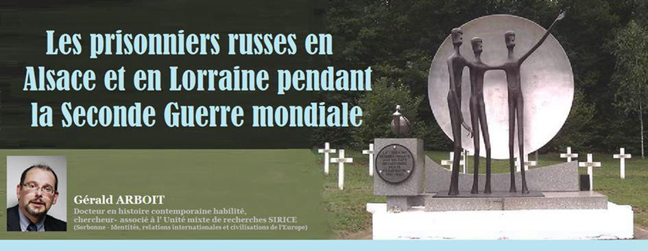
Sans être une énigme historiographique, la question des prisonniers de guerre est relativement peu étudiée. Et quand elle l’est, elle est fortement centrée sur son aspect national et sur la Seconde Guerre mondiale. On mesure cette particularité si l’on cherche à se documenter sur les prisonniers de guerre en relation avec la Russie ou l’Union soviétique en interrogeant les bases de données bibliographiques, comme le Système universitaire de documentation (Sudoc) en France ou Literatur über Russland (RussGus) en Allemagne. Cette mesure a été préférée à celle offerte par l’outil de Google, Books Ngram Viewer, qui ne permet pas une interrogation lexicale équivalente dans les deux langues. De cette comparaison « manuelle », il apparaît toutefois une plus large part d’études consacrées au sort des prisonniers soviétiques dans le Reich dans l’historiographie allemande, alors que l’historiographie française n’y consacre aucune. En Russie, la question des prisonniers était tout bonnement taboue jusque dans les dernières années de l’Union soviétique1.
Publications sur les « prisonniers de guerre » et la Russie/Union soviétique depuis 1974 en France et en Allemagne
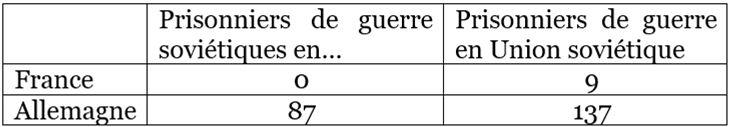Ce particularisme apparait pleinement en Alsace et en Moselle. Il correspond à un « imaginaire social » répondant indirectement à une recherche de racines de la part de classes populaires bouleversées par l’évolution sociale2. Il est le produit d’une rencontre des techniques modernes de communication et de l’essor de la société de communication, induisant un rapport esthétique au monde fondé sur une interaction entre le réel et l’imaginaire3. Le « Malgré nous » à Tambov se surimpose dans la mémoire collective à la présence marginale des Soviétiques dans les mines, les usines et les exploitations agricoles. Il contribue même à renforcer la présence de la Seconde Guerre mondiale dans le champ de la recherche. Pourtant, le phénomène de l’emploi carcéral russe/soviétique par les Allemands concerne les deux guerres. Si le renouveau des War Studies, à la suite de Nicolas Offenstadt en France, et les perspectives des commémorations du centenaire de la Grande Guerre ont permis l’apparition de grandes synthèses englobantes4, au tournant du XXIe siècle, le seul travail portant sur « l’utilisation de prisonniers de guerre comme main d’œuvre », pour la période 1914-1916 toutefois, date de la fin du XXe siècle. Gérard Canisi5 fut le premier à évoquer la question du travail des prisonniers de guerre dans l’espace lorrain.
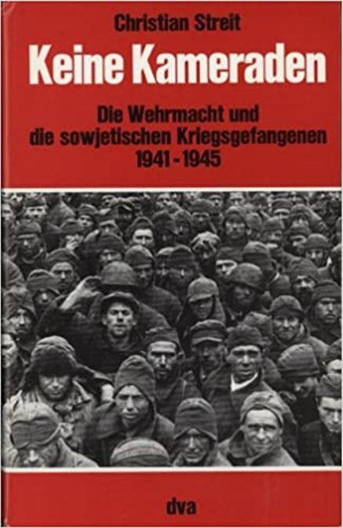Toutefois, pour comprendre l’ampleur et l’organisation de la question concernant les russes/soviétiques, il faut s’en remettre à l’historiographie allemande. Dès 1978, Christian Streit publie Keine Kameraden. Die Wehrmacht und die sowjetischen Kriegsgefangenen, 1941-19456. Pour la première fois, un historien se penche sur le sort terrible des Soviétiques capturés par les Allemands. Mais, là encore, il faut attendre le début du XXIe siècle pour qu’un autre historien allemand, Ulrich Herbert, publie une étude sur l’utilisation économique notamment des travailleurs forcés, dont les prisonniers de guerre, dans l’Allemagne contemporaine. D’abord édité en anglais, en 1991, il n’est traduit en allemand qu’en 20017, ce qui montre que l’Allemagne est également touchée par un « imaginaire social » limitant la recherche à une expiation du nazisme comme idéologie.
En fait, c’est à travers l’histoire locale qu’il importe de faire revivre le passage des prisonniers de guerre dans différents pays d’Europe de l’Ouest. Mais il s’agit plutôt de montrer que les Allemands purent être aussi employés de force dans les industries des pays contre lesquels ils furent en guerre8, que de montrer les Russes/Soviétiques sous domination allemande. Quelques études y ont été consacrées, particulièrement en Lorraine9. À ce degré de micro-histoire, il est possible de se rendre compte du problème d’accès à des sources autres que celles laissées par les Allemands eux-mêmes. Elles se trouvent dans les fonds d’archives publiques, mais le plus souvent d’archives d’entreprises, qu’il s’agisse de la mine de Saint-Pierremont-Mancieulles10, de la Division des Mines Françaises de l’ARBED, à Audun-le-Tiche11 ou de l’ARBED, à Luxembourg12. Ces documents, dont certains étaient parfois destinés à la destruction, permettent de suivre au plus près les mouvements des prisonniers russes/soviétiques, au travers de circulaires générales ou particulières à l’établissement concerné, mais également de saisir la complexité de cette histoire. Ils permettent aussi de faire apparaître une continuité entre les Première et Seconde Guerres mondiales. Seul le caractère idéologique du IIIe Reich apporta une complexité particulière.
Les raisons de l’implantation de prisonniers russes/soviétiques en Alsace-Moselle
En 1915 comme en 1941, la décision allemande d’utiliser une main d’œuvre prisonnière dans son industrie repose sur une possibilité prévue par une annexe de la Convention de La Haye du 18 octobre 1907. Dans son article 6 du Règlement concernant les lois et coutumes de la guerre sur terre, il est prévu que la Puissance détentrice pût utiliser comme travailleurs les prisonniers de guerre selon leur grade, à l’exception des officiers, et leurs aptitudes, à la condition que les travaux ne fussent pas excessifs et qu’ils n’eussent « aucun rapport avec les opérations de guerre (…). « Le salaire des prisonniers contribuera à adoucir leur position, et le surplus leur sera compté au moment de leur libération, sauf défalcation des frais d’entretien. » Après guerre, cet article fut repris par l’article 31 de la 3e convention (relative au traitement des prisonniers de guerre) de Genève, signée le 27 juillet 1929.
Au cours des deux guerres, les autorités militaires allemandes appréhendèrent dans cet état d’esprit l’utilisation de prisonniers de guerre. Au moment de la Première Guerre mondiale, le gouvernement allemand fixa des « principes pour l’occupation des prisonniers de guerre dans l’agriculture, les usines, les mines et dans l’industrie ». Une ordonnance prussienne du 11 septembre 1914, relative aux expropriations de biens ennemis, avait évoqué pour la première fois une telle hypothèse13. Mais, il fallut attendre le 15 janvier suivant pour qu’un premier décret fût pris pour l’ensemble du Reich. Trois mois plus tard, il fut amendé une première fois ; le 15 octobre 1915, le Kriegsministerium arrêta les mesures définitives14. Elles furent complétées par un ordre du 22 mai. Leur application en Lothringen fut prescrite par un ordre du general der Infanterie von Owen, gouverneur militaire de Metz, du 31 août 191515.
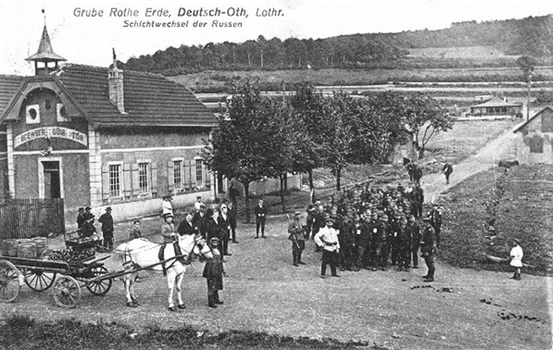
Un contingent de prisonniers russes à Audun-le-Tiche (1915)16
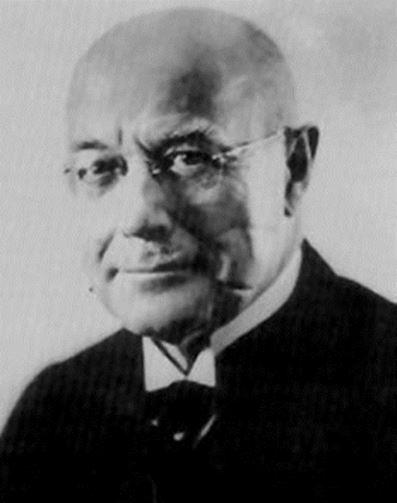Les mêmes préoccupations initiales agitèrent l’OberKommando der Wehrmacht (OKW) en juin 1941 au cours d’une réunion d’experts à Milan. Elles portèrent toutefois sur l’utilisation de prisonniers de guerre uniquement dans les régions occupées de l’Est. Un réseau de camps de transit dans le Reich fut prévu. Les industriels allemands, comme les services économiques de l’OKW, entendaient obtenir l’autorisation de les employer dans l’économie de guerre. Hermann Göring se révéla un très précieux allié. Le chef de l’aviation allemande dirigeait aussi le consortium, gigantesque et difforme, Reichswerke Hermann Göring ; il était au fait des difficultés économiques du Reich et obtint le 31 octobre 1941 que l’OKW ordonnât l’utilisation des Soviétiques dirigée par un Geschäftsgruppe Arbeitseinsatz (service du travail du groupe d’entreprises)17.
Pour ce qui est de l’industrie métallurgique en Moselle, Meurthe-Moselle et Luxembourg, réunie au sein du Bezirksgruppe Nordwest, il s’agissait du Reichsvereinigung Eisen, cette association du Reich pour la production de fer confiée à l’industriel Hermann Röchling à partir de juin 1942. Il lui incombe de répartir la main d’œuvre prisonnière. Les régions du Bezirksgruppe Nordwest furent averties à la fin de l’été de la prochaine affectation d’une main-d’œuvre complémentaire. Toutefois, il apparaît que les industriels lorrains reçurent dès septembre leurs premiers contingents, alors qu’au Luxembourg, c’est-à-dire pour les emprises de l’Arbed en Moselle, il fallut attendre octobre18.
Contrairement à la Première Guerre mondiale, on ne dispose que de chiffres globaux pour la Seconde. À elle seule, cette différence reflète les faiblesses bibliographiques et problématiques concernant cette période. Les données correspondant à la première époque sont donc utiles pour se faire une idée de la situation. À partir de 1915, les prisonniers de guerre russes furent affectés aussi bien dans des exploitations agricoles19, pour assurer le ravitaillement, que dans les mines de fer et les usines. Si leur nombre total reste inconnu, on peut néanmoins distinguer ceux occupés dans les mines de fer de Lothringen et de Lorraine20:
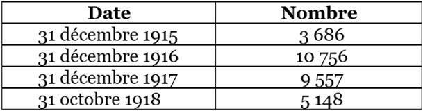Dans les deux Lorraines, les effectifs de prisonniers russes représentèrent près de 30 % de la main d’œuvre employée dans les mines et dans la sidérurgie, alors qu’ils se fixèrent au niveau de l’ensemble du Reich à seulement 11 %.
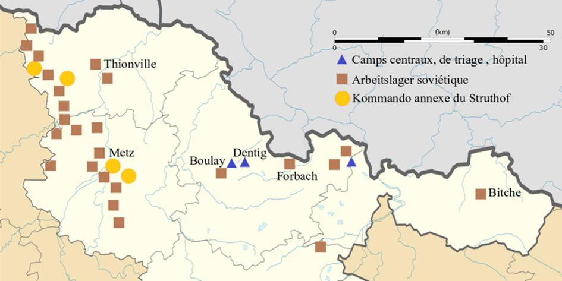
Implantations de prisonniers soviétiques en Moselle pendant la Seconde Guerre mondiale21
Pour la Seconde Guerre mondiale, l’historiographie allemande nous permet de résoudre le mystère du M-Stammlager (Stalag) XIIF/Z, cette annexe installée à Boulay en mai 1941. Ce camp fonctionna en binôme avec celui du Ban Saint-Jean22, établi en septembre 1941 à Dentig, et reçut, selon le décompte des matricules des prisonniers qui les fréquentèrent, 12 424 soldats soviétiques. Un autre camp fut installé en février 1941 à Trêves, le Stalag XIID, qui accueillit 626 Ostarbeiter pour Luxembourg23.
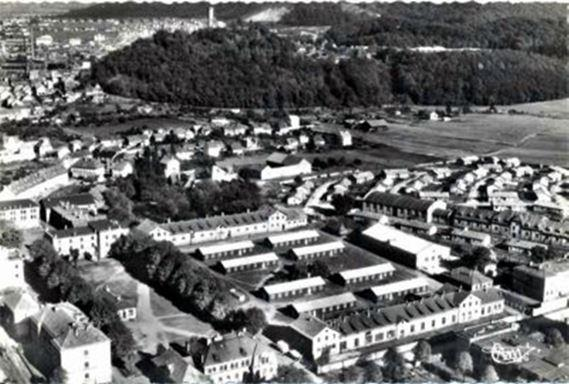Ces chiffres définitifs remettent en cause toutes les croyances fantastiques que les différentes mémoires lorraines et luxembourgeoises retinrent depuis la fin de la Seconde Guerre mondiale. Il est à noter que ces camps furent adossé à un camp principal qui accueillit des prisonniers de guerre occidentaux ; ces derniers ne purent socialiser avec leurs camarades soviétiques. Un troisième camp, le Stalag XIIE de Metz, ouvert le 2 septembre 1941, fut démantelé le 4 septembre 1942 pour être affecté à l’accueil de prisonniers russes à Zambrów, en Pologne. Après avoir transité par divers camps installés sur le territoire du Reich, les prisonniers arrivèrent à Boulay pour être immatriculés, puis transitèrent par Dentig, avant de rejoindre l’un des quelque soixante Arbeitskommandos et les Gemeinschaftlager der Deutsche Arbeitsfront qui furent installés en Moselle. La plupart, près de 8 000 en 1943 soit 64 % de l’effectif total, fut affectée à la métallurgie lorraine, tant en Moselle qu’en Meurthe-et-Moselle. Les autres trouvèrent une place dans la centaine de fermes de l’Ostland, essentiellement en Meurthe-et-Moselle, bien que quelques cas existassent aussi en Moselle, mais également chez divers employeurs publics, comme l’Organisation Todt.
Les étapes de l’organisation allemande
L’utilisation de prisonniers de guerre russes/soviétiques n’alla pourtant pas de soi. Elle participe d’une conception de la guerre totale qui apparut au cours de la Première Guerre mondiale. Il s’agit de la Zwangswirtschaft, une économie dirigée reposant sur l’organisation du ravitaillement et la mobilisation industrielle. Jusqu’aux premiers mois de 1915, la puissance démographique allemande permit de laisser près de la moitié de ses classes mobilisables dans la production. Mais, des problèmes de main d’œuvre se firent déjà sentir un peu partout sur le territoire du Reich. Un Kriegsrohstoffabteilung, créé le 13 août au sein du Kriegsministerium, devint rapidement le centre de l’organisation militaire de l’économie allemande.
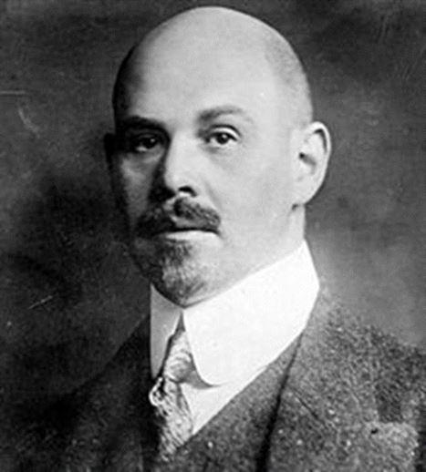Dirigé par Walter Rathenau, directeur de l’A.E.G., il coordonna la répartition des matières premières par l’intermédiaire des cartels regroupant les entreprises consommatrices. Les questions de transports, d’armements, d’emploi et de salaires relevaient quant à elles de l’autorité du general der Infanterie Groener. La mobilisation des nouvelles classes pour les premiers mois de 1915 les amena, dès décembre 1914, à s’interroger sur les besoins de l’économie en main d’œuvre. Des enquêtes régionales furent demandées aux commandants des corps d’armées par le Kriegsministerium.
Le 28 décembre, le generalmajor Friederich, du VII. Korps, rendit compte à Groener des manques à l’ouest du Reich. Les mines de charbon du Bezirkspräsidium von Lothringen n’étaient pas encore touchées, les travailleurs n’ayant pas encore été mobilisés. Mais, ils ne tarderaient pas à l’être, provoquant ainsi la même crise qui frappait déjà la sidérurgie24. Un mois plus tard, le generalmajor Falkenhausen, commandant le XXI. Korps de Saarbrück, demandait au Bezirkspräsident von Gemmingen-Hornberg quels étaient les besoins des sociétés minières et sidérurgiques du Gouvernement Metz en prisonniers de guerre25. Des enquêtes similaires furent faites pour l’agriculture. Pour encadrer cette main d’œuvre, qui avant-guerre exerçait pour la plupart des professions agricoles, les autorités militaires allemandes furent contraintes de démobiliser quelques quatre cents mineurs qualifiés. Pour la réalisation du plan Hindenburg de guerre totale, au début de 1917, les industriels allemands obtinrent encore trois mille cinq cent démobilisations supplémentaires26. Les mesures arrêtées permirent sans aucun doute de faire remonter les effectifs ouvriers à des niveaux similaires à ceux d’avant-guerre. Mais, il en alla autrement de la production...
Vingt quatre ans plus tard, les problématiques furent similaires, mais il fallut l’échec de l’offensive allemande, patent dès décembre 1941, pour que le problème des prisonniers passât de l’OKW vers une structure civile, le Generalbevollmächtiger fur den Arbeitseinsatz (GBA, Mandataire général de la mobilisation pour le travail). Le 21 mars 1942, l’ancien gauleiter de Thuringe, Fritz Sauckel, fut placé à sa tête par Hitler. Cette mobilisation pour le travail ne reposa pas uniquement sur les prisonniers de guerre soviétiques, mais occupa également des recrues volontaires provenant de Biélorussie et d’Ukraine libérées par la Wehrmacht. Ces dernières se montrèrent heureuses de quitter le régime soviétique, qui les affamait, pour une Europe occidentale qu’elles voyaient comme un nouvel eldorado. Leur déception fut à la hauteur de leurs attentes. À partir de novembre 1942, les rafles remplacèrent le volontariat de ceux que l’on connut en Europe de l’Ouest comme des Ostarbeiter27. Ainsi se mit en place un système de Zwangsarbeiter, c’est-à-dire de travailleurs forcés. Il reposait sur une interface entre le GBA et les entreprises industrielles, à savoir les Arbeitsämter et antennes locales du Reichsministerium für Rüstung und Kriegsproduktion. Au niveau de ces deux structures se décide l’Ausländereinsatz, c’est-à-dire la mobilisation de la main d’œuvre étrangère, pour le compte du GBA de Sauckel. Derrière cet euphémisme se trouve toutes les particularités des forces de travail imaginées par l’idéologie nazie : travailleurs libres, Hilfsarbeiter (travailleurs requis), Kriegsgefangenen (prisonniers de guerre), forçats.
Statuts des Russes en Alsace et Lorraine
Ces catégories se retrouvent dans le statut des Soviétiques présents en Lorraine. De leur statut résulta une histoire qui ne peut plus être assimilée à la mémoire locale qui fit de tous ces hommes et ces quelques femmes des prisonniers de guerre et des Russes. Au sens strict du terme, ce ne fut pas toujours le cas. Il y eut aussi des travailleurs libres et des déportés28 originaires de Biélorussie et d’Ukraine.
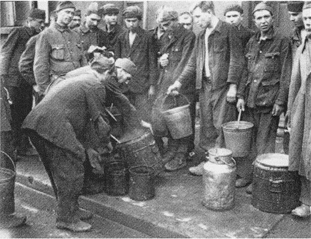
Prisonniers de guerre russes du camp de Sarreguemines29
Les prisonniers de guerre
Après le tri des éléments « dangereux » assassinés en première ligne ou dirigés vers des camps de concentration dans le Reich et en Pologne, les prisonniers de guerre bien portants furent affectés aux entreprises. En Lorraine, ils furent employés essentiellement dans les mines et la sidérurgie. Les premiers arrivants furent ceux devant travailler dans les charbonnages. Pleiger, président de l’Association du Reich pour le charbon, avait obtenu que les prisonniers russes fussent utilisés en priorité dans sa branche. En septembre 1942, deux grands immeubles de la cité Neuland à Creutzwald, furent réquisitionnés à cet effet. La « main-d’œuvre forcée » qui les habita, travailla dans les houillères du bassin de Forbach ; quelques-uns réussirent à être affectés dans des exploitations agricoles du voisinage. Le M-Stammlager XIIF fut complété d’un hôpital. Une vingtaine de cadavres furent également inhumés dans le cimetière de la Houve30. Mais la « main-d’œuvre forcée » fut surtout affectée à Boulay, de mai 1941 à octobre 1943, puis à Forbach, pour travailler dans les houillères du bassin, puis dans les mines et usines de Lorraine ; quelques-uns réussirent à être affectés dans des exploitations agricoles du voisinage. Par la suite, avec la systématisation de l’emploi de prisonniers, le M-Stammlager XIIF fut complété d’un hôpital.
Sur la route de Wissembourg, les casernements de Bitche-camp virent arriver, au début de 1942, un millier de prisonniers31. Leurs gardes étaient impitoyables 32. Une photographie, montrant une vingtaine de soldats soviétiques, pendus aux arbres, circula à l’époque dans les rangs de la résistance lorraine 33. Leur affectation reste inconnue. Certains travaillèrent dans un ancien ouvrage de la ligne Maginot proche, le Simserhof34 ; d’autres furent internés au camp de Veckring. Les Allemands leur firent démonter, dans des conditions de travail et de détention très dures, les rails et le réseau de barbelés du fort du Hackenberg 35.
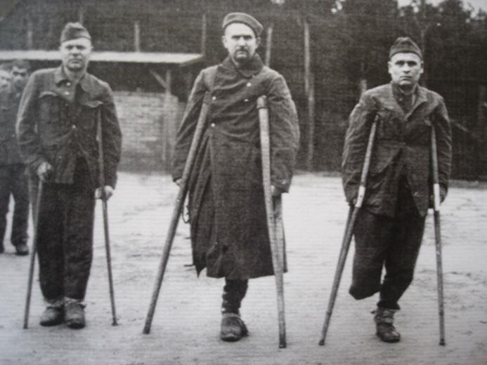
Trois prisonniers de guerre russes de Creutzwald 36
L’utilisation plus systématique des prisonniers russes dans l’économie de guerre conduisit rapidement les Allemands à rationaliser leur distribution aux industriels. Ainsi, durant l’été 1941, un stalag fut installé au Ban Saint-Jean, près de Boulay, dans d’anciens baraquements de la ligne Maginot. Il servit d’annexe au Stalag XIIF/Z, opérant le triage de la main-d’œuvre des mines de fer de Moselle, de Meurthe-et-Moselle, des mines de charbon de Moselle et de Sarre, et des usines sidérurgiques lorraines. Il réceptionna également les blessés, les malades et les inaptes au travail renvoyés par les Arbeitskommandos, qu’il dirigeait ensuite vers Boulay : 12 424 Russes transitèrent par ces camps et 2 879 y moururent (23,18 %)37. Après le retournement du général soviétique Vlassov par les autorités du Reich, les Ukrainiens et les Russes anticommunistes eurent le choix entre conserver le statut de Kriegsgefangener ou d’opter pour une semi-liberté de l’Ostarbeiter. Ainsi s’expliquent les différences constatées entre le sort général des prisonniers de guerre et le lot particulier de certains.
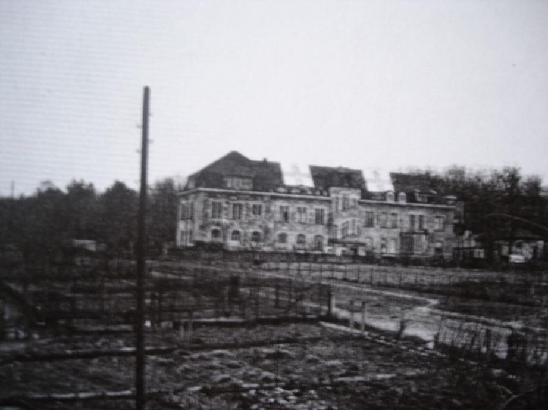
Le M-Stammlager XIIF Erw.-Kgf.-Kranken-Revier Kreutzwald/WM38
À compter de la fin août 1942, les industriels du bassin de Briey furent avertis de la prochaine affectation d’une main-d’œuvre complémentaire. Ils devaient prévoir l’encadrement requis par les autorités allemandes pour accueillir ces prisonniers. Chacune des entreprises minières de la région dut élever dans les plus brefs délais un camp pour les héberger. Les plans des baraquements, achevés de la mine Karl-Ferdinand de Hettange-Grande, furent communiqués dès novembre à toutes les mines39. Mais, les minières possédant un parc immobilier important, il arriva qu’elles l’utilisassent pour accueillir leurs prisonniers. Ainsi, à Audun-le-Tiche, où l’A.R.B.E.D., qui gérait les actifs de l’ancienne Société minière des Terres Rouges, affecta l’ancienne cantine des célibataires à ce service. Les bâtiments furent sommairement entourés de barbelés et l’ancienne prison communale, sise dans ce périmètre, reprit du service.
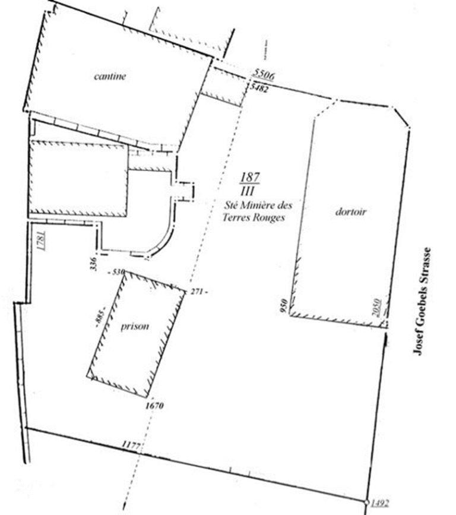
Le camp des prisionniers russes à Audun-le-Tiche : l’ancienne cantine des célibataires italiens
Les trois mines meusiennes et la plupart des villes de Moselle et de Meurthe-et-Moselle reçurent leurs contingents à compter de décembre 1942. Certains furent logés sur le lieu de production, d’autres dans les cantines des travailleurs italiens ou dans des baraquements de la ligne Maginot : à Bouligny, à Joudreville et Amermont40, à Nilvange (mine Victor)41, à Suzange42, à Neuchef, à Marspich, à Florange, à Elange, à Knutange43, à Elzange, à Terville, à Thionville (près de l’ancien crassier de Wendel), à Hettange-Grande, à Ottange (dans des bâtiments de la mines Ottange III, sur la route de Rumelange44 et sur le fonds de Nondkeil), à Nondkeil (à l’infirmerie de la mine Ottange II)45, à Audun-le-Tiche46, à Aumetz (sur la route menant à Audun)47, à Crusnes, à Droitaumont48, à Labry, à la mine Saint-Pierremont de Mancieulles49, à Anderny50, aux mines « Orne et Moyeuvre » entre Jœuf et Moyeuvre51, à Piennes, à Landres, à La Mourière, à Murville52, à Moustiers53, à Jarny-Giraumont54 et à Valleroy55. Hayange en compta même sept, au Faubourg Sainte-Berthe, rue Saint-Joseph, à la mine Carl Lueg56. Les anciennes casernes de la ligne Maginot de Tressange et Ludelange reçurent également des prisonniers russes.
Un tableau dressé le 31 mai 1944 par un agent soviétique, Ivan Ivanovich Trojan, permet d’établir l’existence de quatorze camps dans le Pays-Haut meurthe-et-mosellan, autour des bassins de Baroncourt, Homécourt et Conflans. Son auteur ayant été arrêté entre le 15 et le 17 juin suivant, il ne s’agit donc pas d’un document définitif. Cet outil de travail devait être complété et modifié « en fonction du travail des camps », c’est-à-dire de leur reconnaissance par les Soviétiques opérant dans cet espace au nom du Comité central des prisonniers de guerre soviétique, un organe créé par les Francs-Tireurs et Partisans (FTP), mais géré par le Народный комиссариат внутренних дел (Commissariat du peuple aux Affaires intérieures, NKVD)57.
« Tableau caractérisant les camps »58
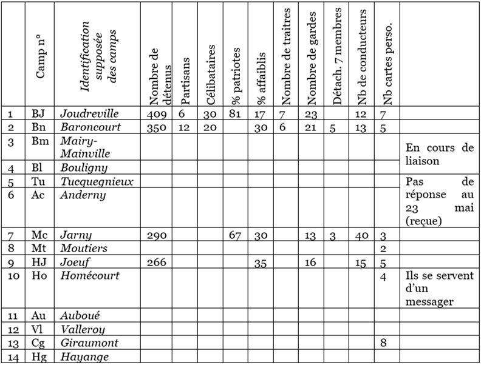Par sa conception, on perçoit bien le souci de planifier à la fois la reconnaissance des différents camps hébérgeant des militaires soviétiques que de préparer leur évasion et leur mise en opération une fois évadés. La colonne « Partisans » est donc à comprendre comme faisant mention aux préparations aux missions de partisan, organisées par l’état-major central du mouvement partisan, en Union soviétique. Celle pointant les « détachements de 7 membres », représentant trente-cinq hommes à Baroncourt et quinze à Jarny, cherchait à quantifier les groupes de combat constitués et immédiatement opérationnels. Les FTP constituèrent plutôt des équipes de quatre hommes, dont un chef de détachement59. Quant aux « conducteurs », cette indication montrait autant que les groupes de partisans étaient perçus comme de véritables unités combattantes de l’Armée rouge, mais que les FTP disposaient de moyens automobiles60. Enfin, comme en Espagne, les traitres étaient répertoriés, d’autant plus dans ce cas qu’ils pouvaient mettre en péril toute l’opération d’évasion par leurs mouchardages.
Il manque pour la Moselle et l’Alsace un document similaire. Il est certain que Trojan ne s’occupa pas des territoires occupés par les troupes allemandes. Des recontitutions mémorielles laissent entendre que le russophone Jean Burger (Mario)61, chargé de l’organisation de la résistance communiste en Moselle depuis 1941, fut contacté par un de ses contacts dans l’est-mosellan qui avait recueilli des évadés soviétiques. Toutefois, Moscou infiltra en Moselle deux agents formés par l’état-major central du mouvement partisan, Leonard Nagorski et Zinaida Kotowa. Ils arrivèrent d’ailleurs comme travailleurs requis, affectés à un chantier de l’Organisation Todt de Thionville, en mars ou avril 1944. Mais, la pénétration du monde ouvrier des usines du bassin thionvillois s’avéra compliquée, tant en raison des Werkschutzen, les polices d’usines mises en place par les industriels, que des Abwehrbeauftragten, ces agents de contre-espionnage infiltrés par la Gestapo de Metz au sein des cadres des entreprises, particulièrement sidérurgiques. Et le 26 juin, les deux officiers de renseignement soviétiques infiltrés en Moselle furent arrêtés, sans avoir pu commencer à travailler pour la libération de leurs camarades soldats62. À ce jour, la présence d’une telle équipe en Alsace n’est pas connue.
Les travailleurs requis
L’aménagement des cavités, mines et tunnels, en abris ou en usines souterraines impliquait également l’utilisation de main-d’œuvre « auxiliaire » (Hilfsarbeiter). Appelée généralement Ostarbeiter, en raison de leur origine géographique, il s’agissait de travailleurs soumis à travail obligatoire. Ils diffèrent des 197 Ausländische Zivil [Zwangs] arbeiter (travailleurs civils étrangers, AZA) arrivés le 20 août 1942, de Dachau, au KL-Natzweiler ; il s’agissait bien de prisonniers de guerre soviétiques63. À Amnéville, un Gemeinschaftlager der Deutsche Arbeitsfront accueillit 1 252 Hilfsarbeiter des deux sexes. D’autres arrivèrent à Errouville mi-mars 1944. Gardés par des sentinelles de l’organisation Todt, ils étaient logés dans un ancien cantonnement de la ligne Maginot d’Errouville. Comme à Amnéville, ce regroupement présenta la particularité d’être mixte, 1 200 hommes et 400 femmes64. Il ne s’agissait pas de camps de prisonniers, puisque hommes et femmes vivaient ensemble et des naissances furent signalées, dix-sept à Amnéville65 et cinq à Errouville66 ; il existât même à Amnéville un journal destiné à ce seul public, tandis qu’à Errouville, un studio photographique y fut installé par l’équipe d’évasion de Trojan… Surtout, ces Hilfsarbeiter pouvaient déambuler, le dimanche et les jours de fête, dans ces villages lorrains et alentours.
D’autres Ostarbeiter les rejoignirent un mois plus tard, à Villerupt et à Thil. Environ 2 000 hommes, Russes et Ukrainiens, mais aussi Serbes, Polonais, Portugais et Espagnols vinrent former une « colonie de travailleurs étrangers ». Les premiers s’étaient portés volontaires pour intégrer l’organisation Todt, les autres avaient été requis dans les camps de chômeurs d’Europe. Ils furent logés dans des groupes scolaires, cafés, cinémas et salles des fêtes des deux cités ouvrières67. Ils furent affectés, comme les auxiliaires d’Errouville, à l’aménagement de la mine du syndicat de Tiercelet en usine souterraine.
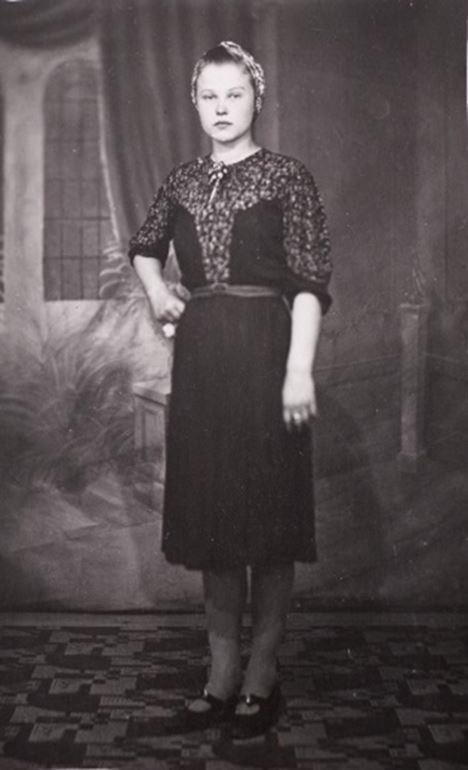
Affectée à Errouville, Vera Vassilieva, 10 juillet 194468
D’autres camps apparurent à mesure des travaux entrepris par les Allemands pour camoufler leur industrie de guerre69. À Algrange, la mine Burbach accueillit, à compter du 11 mai 1944, cinq cents prisonniers russes de l’organisation Todt70. Comme à Aumetz, ces Zwangsarbeiter comprenaient aussi bien des enfants, des vieillards, des femmes que des hommes. Ils étaient partisans, condamnés politiques ou travailleurs récalcitrants. Ces « travailleurs forcés » accomplissaient les besognes manuelles les plus pénibles et dangereuses. Ainsi, trente Ukrainiennes furent affectées à l’aménagement de la mine Wilhelmine d’Ottange, fin 194371, d’autres au creusement d’une tranchée le long de la route d’Hussigny à Audun-le-Tiche, au printemps et à l’été 1944. En août, cinquante femmes soviétiques arrivèrent à Urbès, évoquées quatre ans plus tard par l’ancien Ortsgruppenleiter, Frédéric Kennel , comme des « travailleuses libres », pouvant se promener librement le dimanche et les jours de fête. D’autres travailleurs requis furent affectés dans les usines de production de matériels de guerre72. Ainsi, certains furent envoyés à Rhinau, en Alsace, où les autorités allemandes avaient réquisitionné une manufacture pour produire du matériel électromécanique destiné à l’aviation. Des Ukrainiens et des Russes blancs, âgés de quatorze à soixante ans, s’installèrent avec leurs familles dans des baraquements construits à cet effet. Leur condition de vie n’avait rien à envier à leurs compatriotes d’Errouville73. Des femmes et des jeunes filles russes furent employées dans les usines de Hagondange74. Deux autres occupèrent des postes de femmes de ménage dans les bureaux de Terres Rouges à Audun-le-Tiche75.
Les déportés
Parce que l’Union soviétique n’avait pas ratafié la Convention de Genève sur les prisonniers de guerre (1929), les soldats soviétiques tombant entre les mains des troupes allemandes amenèrent l’OKW à deux attitudes différentes, d’abord l’extermination d’adversaires politiques76, puis la construction de la fable des AZA, que l’on retrouvait à Dachau et à Natzweiler. Hitler avait ordonné l’élimination des éléments « dangereux » de l’armée Rouge, c’est-à-dire les cadres du parti communiste, plus particulièrement les commissaires politiques. La Wehrmacht fut donc obligée d’opérer un « tri des éléments considérés d’un point de vue racial ou politique comme indésirables ». Remis ensuite aux Sections spéciales (SS), ils furent abattus ou envoyés en camp de concentration. Les survivants furent démobilisés. En novembre 1941, Himmler décida de ne conserver que les prisonniers aptes à travailler dans les carrières. Près de 600 000 prisonniers furent ainsi épurés. Rien que pour décembre 1941, les SS exécutèrent 16 000 des 22 000 Russes remis par l’armée77.
Le Konzentrationslager- (camp de concentration, KL) Natzwiller accueillit, de novembre 1941 à septembre 1944, 11 150 déportés russes. Ils provenaient des camps de Lublin, de Dachau, de Gross-Rosen, de Sachsenhausen et de Buchenwald. Les trois quarts ne vinrent jamais dans le camp principal, mais furent affectés directement dans un de ses seize kommandos de travail et camps annexes installés en Alsace (Mulhouse, Cernay, Urbès, Colmar, Sainte-Marie-aux-Mines, Obernai, Dorlisheim, Rothau, Strasbourg et Schwindratzheim) et en Moselle (Peltre, Metz, Hayange et Audun-le-Tiche) annexés, ainsi qu’en Meurthe-et-Moselle (Thil), c’est-à-dire en France, ou un des treize autres installés sur le territoire du Reich, dont douze ouverts après septembre 1944. Il est à noter que seuls les camps de Cernay, d’Urbès et de Sainte-Marie-aux-Mines reçurent en fait 938 russes, soit 19 % des effectifs russes du KL-Natzweiller.
Les effectifs de prisonniers soviétiques au KL-Natzweiler (1941-1944)
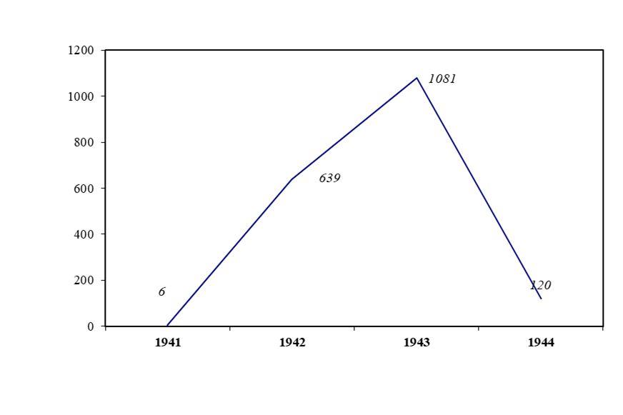Dépendant du KL-Natzweiler, le Kommando du Struthof, exploitant la carrière est connu pour ses dures conditions78. Dès l’automne 1942, un camp presque exclusivement composé de 200 Russes, s’installa à Obernai, près de l’école SS de transmissions79. Quelque 79 Russes arrivèrent le 26 mars 1944 à Urbès80. À la même époque, 437 furent affectés au Kommando de Sainte-Marie aux Mines pour le compte de BMW81. À Thil, huit Russes arrivèrent le 3 juillet 1944, âgés de dix-neuf à quarante-quatre ans dont sept furent classés Arbeitszwang Ausland (AZA), bien que le dernier étant encore un Kriegsgefangener 82 83.
Alors que le tribunal militaire de Metz admit seulement, le 15 juin 1954, que des Russes y avaient été tués, il est possible de détailler les conditions de ces décès : cinq furent fusillés à Sainte-Marie-aux-Mines, tandis qu’au moins 132, notamment parmi les premiers arrivés en août 1942, décédèrent au camp principal84. Certains y servirent à des expérimentations médicales. Le professeur en médecine Hirt proposa de réunir des crânes de « commissaires judéo-bolcheviques85». Des déportés soviétiques furent également envoyés au camp de rééducation de Schirmeck-Vorbrück. Sur les quatre-vingts décès recensés, on dénombre deux Russes86.
Des déportés russes furent envoyés au camp de Woippy en Moselle. De novembre 1943 à fin août 1944, il accueillit plus de 4 000 prisonniers87, dont un grand nombre de Soviétiques. Ces derniers étaient employés aux usines Hobus, séparées du camp par la route de Metz. Le 28 août 1944, 100 prisonniers russes furent évacués par les autorités allemandes88. Le sort des autres prisonniers resta inconnu jusqu’en avril 1963. A cette époque, les travaux de nivellement de l’autoroute A4, à six cents mètres du camp, mirent à jour quatre fosses communes. Des corps nus furent retrouvés, recouverts de chaux ; toute identification était rendue impossible89, ouvrant la voie à toutes sortes de supputations. La responsabilité du commandant du camp de Queuleu, Georg Hempen, fut avancée90. On pensa également à la fin précipitée du voyage d’un train venant de Compiègne. Mais, la présence de boutons de vareuses soviétiques vint rapidement démentir ces hypothèses.
Éléments de convergence, éléments de distinction : l’exemple du bassin ferrifère
En général, les travailleurs soviétiques, qu’ils fussent Kriegsgefangene, Hilfsarbeiter ou Ostarbeiter, ne se distinguaient guère aux yeux du Lorrain ou de l’Alsacien. Pour eux, ils étaient venus de l’Est par wagons à bestiaux. Les Allemands les obligeaient à travailler et les nourrissaient de la même façon. Il n’y avait guère que le logement qui changeait ; et encore, pour ceux qui avaient la chance de se retrouver dans des casernements de la ligne Maginot, ou de loger dans une maison vidée par l’exode91, la grande majorité vivait dans les mêmes conditions sanitaires déplorables. Pourtant, les Allemands entretenaient, d’un point de vue salarial, une distinction terminologique au sein de cette main-d’œuvre forcée. Ces convergences et ces divergences sont plus saisissables dans leurs nuances au sein du bassin ferrifère de Lorraine, tant dans les mines d’Audun-le-Tiche, d’Aumetz, d’Hayange, de Saint-Pierremont ou de Joudreville, qu’au camp d’Errouville.
UNE CONVERGENCE DU POINT DE VUE DES CONDITIONS DE VIE ET DE TRAVAIL
Une fois affectés dans une mine à l’extraction de minerai, les Russes étaient à la charge des entreprises exploitantes. Le Generalbeauftragte für die Eisenerzgewinnung und verteilung für Gebiete Luxemburg und Lothringen confiait leur surveillance et l’organisation de leur vie aux différents sièges. Dans le Westmark, il agissait par l’intermédiaire du Lothringishes Minettreviers z. Zt. Erzförderung, gérant l’ensemble des mines de fer mosellanes. En Meurthe-et-Moselle, les autorités occupantes passaient par le Comité d’organisation des industries du fer de la Chambre syndicale des mines de fer de France92. Quand il s’agissait de sociétés importantes, comme l’ancienne Société minière des Terres Rouges à Audun-le-Tiche, l’encadrement des Ukrainiens et des Russes se faisait par les gardes de l’entreprise, parfois embauchés pour l’occasion, formant le Werkschutz93. Ailleurs, sur l’ensemble du plateau lorrain et dans les mines De Wendel, dont les dirigeants étaient notoirement hostiles au Reich, l’administration allemande imposait la constitution d’un Werkschutz, composé d’une dizaine de mineurs. Quatre à six hommes suffisaient à encadrer un convoi de cent prisonniers. L’un d’eux faisait fonction de Hilfspolizei, armé d’un fusil. Un petit détachement de la Reichswehr était également affecté à la garde des camps. À Orne et Moyeuvre, en septembre 1942, il n’y avait qu’un sous-officier et quatre hommes94.
Les conditions de vie des prisonniers russes dans les mines étaient déplorables. Pourtant, à l’arrivée des premiers convois, les autorités françaises de Meurthe-et-Moselle, dépendant théoriquement de Vichy, avaient cherché à contrôler les conditions de leur séjour. Une commission de la Chambre syndicale des Mines de fer de France était même venue se rendre compte, à la fin septembre 1942, de l’état des travaux d’aménagement des camps et avait pu constater de l’état de santé des premiers Russes arrivés en Lorraine95. De même, la Croix-Rouge suivit le sort de ces hommes. Mais, comme les Soviétiques n’avaient pas signé la convention de Genève96, les Allemands et leurs émules locaux n’en avaient que faire. A Aumetz, un officier allemand libéra un prisonnier et lança à sa poursuite trois de ses soldats, ivres. Ils l’abattirent dans la rue prétextant une tentative d’évasion97. A Joudreville, un autre fut lardé de coups de baïonnette pour avoir ri dans les rangs. A Knutange, le 10 septembre 1944, Gregor Sadwirni décéda d’un coup de feu au ventre98. Les traînards furent aussi victimes de coups par leurs gardiens. Le fait est signalé tant pour les troupes allemandes99 que pour les gardes des anciennes minières100.
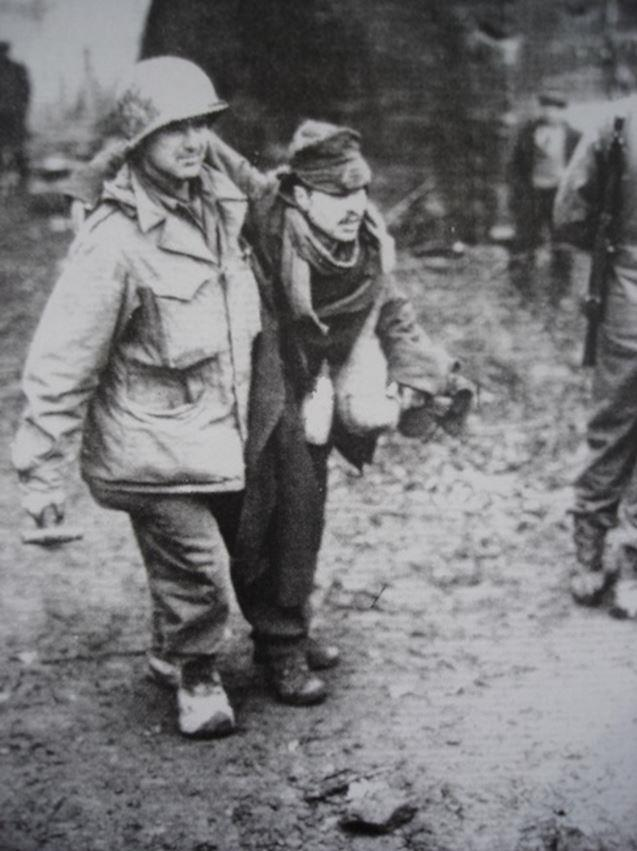
L’état de santé d’un prisonnier russe de Stiring-Wendel101
La situation sanitaire de ces hommes se détériorait rapidement 102, malgré certaines précautions prises lors de la construction des camps du bassin ferrifère lorrain. D’abord, les conditions de transport, la promiscuité n’arrangeaient pas les choses. Il n’était pas rare que l’état de santé de certains exigeât leur renvoi, à leur arrivée, dans leur stalag d’origine ; à compter de 1943, ils furent expédiés à celui de Boulay. Le premier convoi arrivé au camp de Orne-Moyeuvre comptait deux morts et vingt inaptes104. Même chose à la mine de Saint-Pierremont, où chacun des quatre convois vit une part, sans cesse plus importante, de ces prisonniers déclarés inaptes105. Il est vrai que les revers des troupes allemandes sur le front de l’Est à compter de l’automne 1942 empêchaient un renouvellement de la « main-d’œuvre forcée ».
Par ailleurs, les épidémies étaient courantes et les défenses immunitaires sérieusement entamées par les privations. Les Ostarbeiter, placés à Errouville, furent décimés par le typhus dès leur arrivée, vingt-quatre morts entre mars et août 1944. Les dépouilles furent enterrées au cimetière de Serrouville106. Les Kriegsgefangene étaient acheminés directement du front, dépourvus de tout effet personnel de rechange. Les uniformes devinrent rapidement des guenilles. Parfois, comme à Creutzwald ou à Sarreguemines, ils étaient remplacés par de vieux effets militaires allemands. Enfin, « ces esclaves [étaient] mal nourris : une soupe et quatre cents grammes de pain en tout et pour tout ». Et encore, les pommes de terre étaient rares et les choux souvent pourris. En Meurthe-et-Moselle, le service des Mines français fournissait des victuailles supplémentaires, mais les Allemands les vendaient au marché noir107. Leur faim restait intarissable108.
Ces conditions générales de vie rendaient cette « main-d’œuvre forcée » incapable de supporter les cadences de travail imposées. D’autant qu’aucun des prisonniers n’était mineur de profession. La liste des cent vingt Soviétiques arrivés à Saint-Pierremont, en février 1943, est édifiante109 : les ouvriers agricoles représentaient 72 % du contingent, tandis que ceux de l’industrie n’arrivaient qu’à la troisième place (6 %), derrière les artisans (11 %). Même chose pour les déportés d’Europe centrale, envoyés du Struthof à Thil le 3 juillet 1944110. Les huit Russes étaient, à l’exception du plus âgé qui était cordonnier, des ouvriers111. Cette inexpérience des prisonniers employés à l’abattage dans les mines de fer de Lorraine est à relativiser au regard du nombre de tués. En effet, on ne déplora, semble-t-il, aucun mort parmi les Russes blancs et les Ukrainiens présents à Audun-le-Tiche depuis décembre 1942. Mais, il n’en fut pas de même partout. La mort de quatre prisonniers fut attestée à Aumetz dont trois victimes d’accidents du travail112. Même chose à Knutange, avec trois décès enregistrés113 et seulement un accidentel114. Les rapports d’exploitation des mines d’Hayange, pour la période 1940-1944, établissent, du 1er janvier 1943 au 31 août 1944, le décès de quatre-vingt-cinq Soviétiques, dont seulement dix-sept clairement recensés comme accidents de travail115. À Joudreville, des morts sont signalées, mais elles sont le fait des mauvais traitements116. Les motifs des soixante-cinq décès du camp Sainte-Berthe, à Hayange, sont inexpliqués117. Étrangement, on ne dispose d’aucune indication pour la mine de Saint-Pierremont118.
Rendements moyens à l’abattage119 par homme et par jour, en tonnes
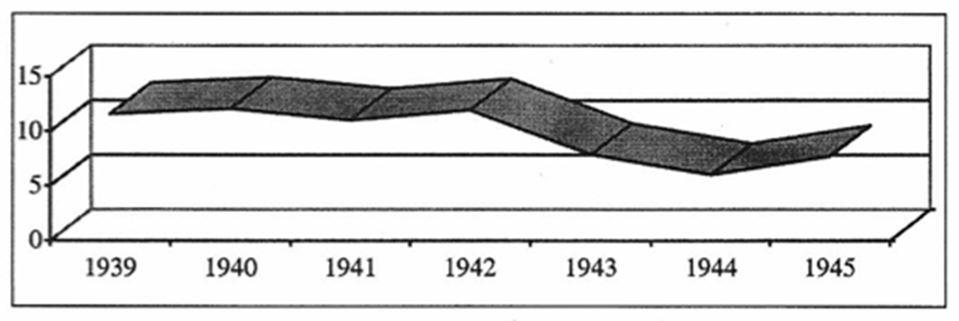L’inexpérience de cette « main-d’œuvre forcée » et ses mauvaises conditions de vie sont responsables des mauvais rendements de l’abattage. Les prisonniers servaient de chargeurs aux mineurs professionnels libres. Ces derniers freinaient leur travail en raison de l’inertie des premiers120. En Meurthe-et-Moselle, où le syndicalisme était plus implanté dans les mines qu’en Moselle, les professionnels voyaient aussi avec méfiance l’arrivée de cette main-d’œuvre complémentaire121. Les Allemands et les chefs d’exploitation essayèrent d’encourager, par des suppléments de nourriture, les Russes à produire plus122. Mais, les rendements par homme ne s’envolèrent pas. En fin de période, et malgré l’utilisation d’une « main-d’œuvre forcée », les rendements d’abattage étaient même inférieurs à ceux de 1913. La production des mines de fer de Lorraine s’en ressentit. Les objectifs imposés par l’occupant, malgré l’abondant personnel prisonnier, ne retrouva pas son niveau d’avant 1940.
Production totale des mines de Moselle et de Meurthe-et-Moselle et production totale de la mine Montrouge/Saint-Michel d’Audun-le-Tiche123 en millions de tonnes
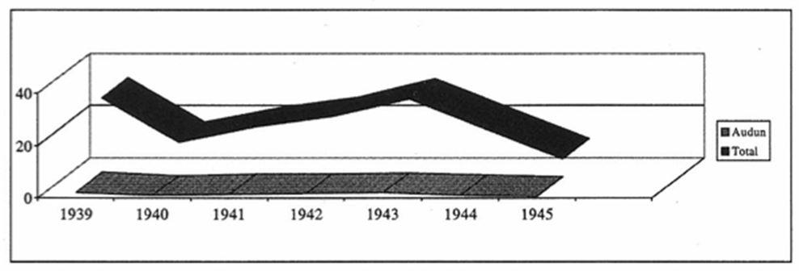
UNE DISTINCTION DU POINT DE VUE SALARIAL
Soumis aux même conditions de travail, les Soviétiques employés dans les mines de fer de Lorraine n’étaient pas unis dans leur sort. Ukrainiens, Russes blancs, prisonniers de guerre et militants du Parti communiste d’Union soviétique se divisaient par une haine de l’autre. Les deux premiers jouissaient de plus de libertés dans les camps, pouvant se rendre librement en ville le dimanche. De plus, ils n’étaient pas gardés par les Allemands. Cette situation avait pour effet de les faire passer pour des traîtres aux yeux des seconds.
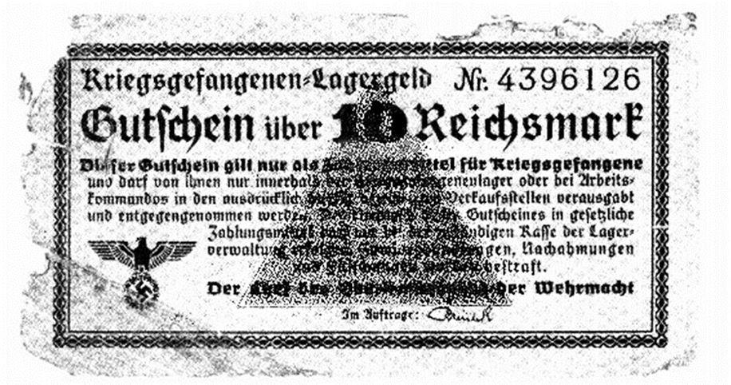
Un Lagergeld, imprimé par l’Oberkommandos des Wehrmacht : valeur dix Reichsmark, validité à l’intérieur du camp125
Pseudo libres et non libres se distinguaient encore par leurs niveaux de salaires accordés. Classés dans la catégorie des Untermenschen, les Zwangsarbeiter constituaient une main-d’œuvre gratuite, où puisait naturellement l’organisation Todt. Prisonniers de guerre et Ostarbeiter recevaient, quant à eux, un salaire en Reichsmark, du moins en théorie. Les premiers recevaient leurs traitements en monnaie du camp, le Lagergeld, émis par l’OKW. Dans les mines du bassin ferrifère de Lorraine, ils étaient établis par les services allemands de l’Administration des mines de Metz et correspondaient généralement à 60 % de ceux versés à un ouvrier libre. Le rapport Régnier présente une feuille de salaire, pour le camp d’Orne et Moyeuvre, pour septembre 1942126 :
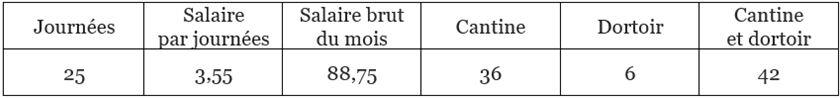Les travailleurs auxiliaires de l’organisation Todt, catégorie intermédiaire plus tout à fait libre et pas encore totalement esclave, avaient un statut salarial inférieur aux prisonniers de guerre. Ainsi, étaient payés ceux d’Errouville127, en avril 1944 :
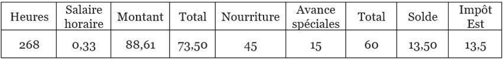Il apparaît, en comparant les deux relevés, que les prisonniers travaillaient en moyenne dix heures par jour, vingt-cinq jours par mois. Pour un salaire horaire apparemment similaire, un prisonnier ne touchait qu’un tiers de ce que percevait un travailleur requis. Mais le Hilfsarbeiter était soumis à une double imposition. D’abord, une avance spéciale était retenue proportionnellement au nombre d’heures travaillées. Ensuite, leur revenu était confisqué par l’impôt touchant les citoyens d’un pays vaincu128.
Des prisonniers russes dans leur environnement local
Le phénomène concentrationnaire est toujours difficile à saisir dans son environnement local. Dans quelle mesure les habitants étaient-ils au courant de la présence de ces prisonniers dans leur cité ? Que savaient-ils de leurs conditions de vie ? Le cas des Russes semble toutefois plus aisé à saisir. D’abord car ils étaient affectés directement à l’activité minière ou métallurgique, donc en ville. Alsaciens et Lorrains étaient leurs compagnons de travail. Certains devinrent bientôt leurs frères de combat. Mais l’utilité militaire des prisonniers soviétiques était limitée. Ensuite, car ils ne furent pas tous évacués par les Allemands dans leur retraite.
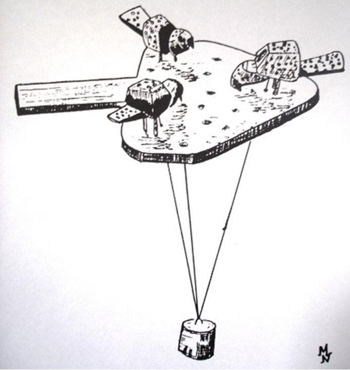
Un jouet fabriqué par des prisonniers russes de Mancieulles129
Leurs rapports avec la population
L’arrivée d’une main-d’œuvre, fut-elle forcée, étrangère au métier a été perçue comme une tentative de chamboulement de l’ordre social établi. Ce sentiment était d’autant plus exacerbé dans les zones de syndicalisation précoce. Ainsi, il ne fut pas étonnant de retrouver des comportements de méfiance envers ces nouveaux venus au sein de la classe ouvrière de la Meurthe-et-Moselle industrielle. La commission de la Chambre syndicale des mines de fer de France le notait en septembre 1942 : « Il est nécessaire de convaincre nos ouvriers qu’ils ne sont pas lésés par l’introduction de cette main-d’œuvre. Les chefs d’exploitations mosellans y sont arrivés »130. Le même comportement fut noté par le commissaire spécial des Renseignements généraux, à Longwy, le 28 avril 1944. Il informait son supérieur à Vichy de l’arrivée d’Ostarbeiter à Thil et Villerupt :
« Les milieux ouvriers [s’attendaient] à des changements importants (...). Les mineurs [envisageaient] sans enthousiasme leur affectation possible dans un chantier éloigné de plusieurs kilomètres du lieu de leur résidence ». Par ailleurs, les autorités françaises ne perdaient pas « de vue que la mentalité et les coutumes de cette minorité [restaient] complètement inconnues ».
Aussi, elles pensaient utile d’ajouter à la surveillance de l’occupant celle de la police française, « en ce qui [concernait] tout au moins l’intérêt de la population »131.
Bien que les autorités allemandes aient strictement interdit les contacts entre civils et prisonniers132, l’installation de camps dans les villes favorisait inévitablement toutes sortes de relations. Elles étaient permises par la sollicitude de certains. Ainsi, à Ottange, malgré la pénurie de tabac, il n’était pas rare de voir des mégots bien alignés sur les trottoirs, sur le passage des prisonniers133. Elles étaient recherchées par les Russes. Ainsi, arrivait-il de voir des Ukrainiennes du camp de Rhinau se rendre chez le coiffeur de Benfeld134... Mais la recherche de nourriture motivait plutôt ces rapports. Les Ostarbeiter d’Audun-le-Tiche, en semi-liberté135, comme les Kriegsgefangene de Mancieulles, d’Aumetz136 ou les Hilfsarbeiter du camp d’Errouville, soumis à un régime très sévère de la part des Allemands, allaient mendier137, ou plutôt troquer des victuailles. En effet, il n’était pas rare de trouver à Audun-le-Tiche ou dans les fermes de Crusnes, d’Errouville et de Fillières ces étranges petits jouets mécaniques, taillés dans du bois de récupération et coloriés, figurant des oiseaux picorants ou des serpents, ou des paniers de paille tressée en forme de cœur.
Au sein des usines et des mines, les mêmes interdictions prévalaient. Mais les ouvriers et mineurs ne pouvaient rester insensibles au sort de ceux qui étaient devenus, par la force des événements, leurs « collègues » de travail. Pour les réconforter, certains n’hésitaient pas à glisser dans leurs musettes quelques pommes de terre cuites138. D’autres profitaient de la distribution des lampes pour leur passer furtivement des petits pains, obtenus d’un boulanger compréhensif, de l’ersatz de chocolat et quelques cigarettes139. D’autres encore, amenés à travailler à proximité de prisonniers, agissaient de même. Ainsi, cet électricien de Boulay, chargé de l’entretien du réseau électrique du camp du Ban Saint-Jean qui, avec son épouse, collectait des vivres auprès des commerçants du lieu pour les redistribuer aux Russes. Jusqu’en septembre 1943, la résistance mosellane lui fournissait également des paquets confectionnés à Metz contenant sucre, vitamines, tabacs, et cigarettes140... Plus généralement, « la mauvaise impression du début, produite par les différences de langues, de mœurs, de conditions sociales, [s’étaient] considérablement atténuée. S’il [était] vrai que l’indigène serait soulagé de voir s’éloigner cette masse d’étrangers, il n’y [attachait] plus la même importance que précédemment (...). Il [s’était] habitué à ce nouveau genre d’occupation et s’y [résignait] raisonnablement »141.
Bien entendu, les risques étaient énormes de part et d’autre. Les prisonniers étaient passibles des pires sévices s’ils étaient pris ; certains furent même jugés pour vol142. Quant aux Français, ils devaient se garder des dénonciations ; leurs secours pouvaient leur valoir la déportation. Ainsi, ce surveillant qui laissait les prisonniers chaparder dans les wagons qu’ils déchargeaient ou ces deux ouvriers qui passaient des vêtements aux prisonnières de Hagondange. En tout, entre l’été 1942 et l’automne 1944, quatorze mosellans furent arrêtés pour avoir aidé des Soviétiques.
De l’évasion à la résistance
Les évasions étaient également dangereuses. Le 8 septembre 1941, le responsable des prisonniers de guerre à l’OKW, le général Reinecke, avait ordonné de tirer à vue sur tout fugitif143. Elles restèrent un phénomène rare, impossible à chiffrer. Seules des données précises existent pour le camp de Saint-Pierremont. Pendant les dix-neuf mois qu’il exista, on ne recensa que treize évasions144. Les autres camps n’ayant pas été étudiés, il faut s’en remettre à des indications partielles. Des évasions furent signalées à Audun-le-Tiche145, à Errouville146, à Giraumont147et à Boulay. Un jeune Ukrainien échappa aux Allemands en gare de triage du Sablon, à Metz, caché dans une guérite de serre-frein ; découvert par un mosellan employé des chemins de fer, il fut mis en sécurité par la résistance148.
Les conditions de vie imposées aux Kriegsgefangene avaient rapidement eu raison du devoir primordial de tout soldat tombé aux mains de l’ennemi : s’échapper par n’importe quel moyen. De fait, seuls les moins préparés au dur travail d’esclave cherchaient à se sauver, un ingénieur, un technicien ou des médecins... La grande masse des prisonniers étant d’origine rurale, il ne fut pas étonnant de les retrouver au nombre des fugitifs.
Bien que peu nombreuses, les évasions présentaient au moins quatre caractéristiques similaires : la première concernait la chronologie entre l’arrivée des prisonniers en Lorraine et leur fuite. Les évasions recensées à Saint-Pierremont se produisirent dans les cinq mois suivant l’affectation des deux premiers convois ; même chose à Audun-le-Tiche, où elle intervint quelque temps après la construction des premières baraques. La seconde similitude se situait quant à la saison choisie. En été, les conditions de survie étaient le mieux réunies. Ce fut le cas en 1943 à Saint-Pierremont et à Boulay, et, l’année suivante à Audun-le-Tiche et dans les bassins de Baroncourt, Homécourt et Conflans. Parmi ces dernières, 243 évasions étaient imputables à l’action de Trojan, dès mars 1944, et du groupe Jelezniak, « spécialis[e] dans les évasions de leurs héros encore entre les barbelés », à partir du 22 juin 1944149. L’hiver, les mouvements étaient plus délicats, la boue et la neige offrant aux gardes de belles traces. Le froid empêchait de longs parcours et nécessitait de trouver refuge dans des abris construits. Les fermes isolées étaient très prisées ; elles étaient aussi surveillées par la troupe et par ses supplétifs. Ainsi, au cours de l’hiver 1942, le zellenleiter de Marsal découvrit deux prisonniers russes évadés dans une grange150. Les fugitifs cherchèrent refuge dans les zones forestières de la région. Il était plus facile, pour un individu vêtu de guenilles et ne parlant ni l’allemand, ni le français, de se camoufler de ses poursuivants, des yeux indiscrets et de ses ennemis supposés, Ukrainiens et Polonais151. Ceux des camps situés au sud du bassin ferrifère prenaient la direction du sud, vers la Meuse. Le point de ralliement des fugitifs d’Errouville était la forêt des Rimonts. De Boulay, les Russes tentant leur chance gagnaient les forêts d’Eincheville et de Guessling à proximité ; d’autres arrivèrent jusque dans les bois d’Olley, près de Conflans152. Les évadés d’Audun-le-Tiche s’enfoncèrent dans le bois d’Ottange.
Aucune de ces évasions n’aurait pu réussir sans la complicité des Lorrains, ni sans la détermination de l’équipe de Trojan pour ce qui était des bassins de Baroncourt, Homécourt et Conflans, notamment les Front-Tireurs et Partisans, du commandant Remo Falcon, dit Brunetto (Plino Ilario153. Ailleurs, les institutions religieuses, comme le pensionnat de jeunes filles de Filières, les abritaient volontiers. La plupart des Russes qui gagnèrent la Meuse y attendirent la fin de la guerre, faute d’armement. La résistance se débrouilla parfois pour leur obtenir des faux papiers, ou leur offrir du travail dans des exploitations agricoles, souvent nuitamment154. D’autres se constituèrent en bandes, rançonnant les villages environnants155.
Ceux qui poursuivirent le combat le firent soit au travers de groupes de la résistance locale, soit dans des unités constituées par Trojan. Dès le 24 novembre 1943, donc avant l’arrivée de l’agent soviétique, un groupe de trente-sept partisans soviétiques se constitua sous le nom de « Stalingrad », attaché aux FTP sous le no 936, code « Ivan », en fait le lieutenant Georges Ponomarev156.
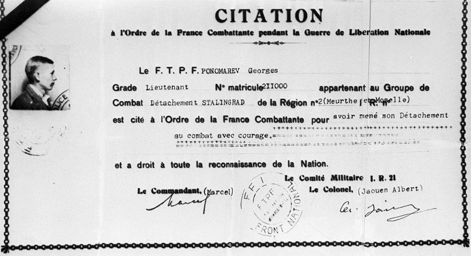Jusqu’au 8 août 1944, dix-sept autres détachements soviétiques se constituèrent dans la forêt meusienne, réunissant 413 hommes et 42 femmes157. Mais on trouve aussi des Russes autour du juge Cosson, à la ferme de la Warière, début 1944, dans les maquis de Grémilly, de la tranchée Calonne et de Lacroix-sur-Meuse. Les derniers mois de l’occupation furent encore marqués par l’arrivée d’une vingataine d’Ukrainiens, déserteurs de l’armée Vlassov avec armes et bagages. Mais, les Russes combattant pour la libération de Saint-Mihiel refusèrent d’être mélangés avec ces « traîtres »158. Profondément divisées, les différentes composantes de ces maquis eurent finalement une utilité militaire limitée, à l’image des mouvements de résistance dont elles dépendaient159.
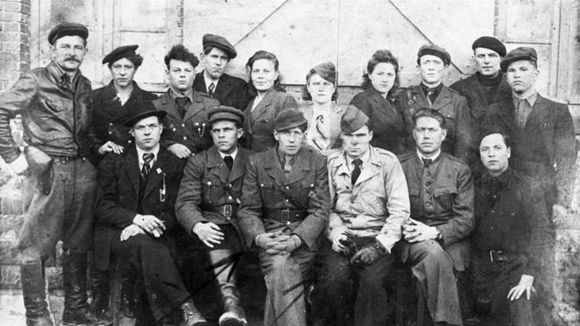
Les partisans soviétiques dans la Résistance française, septembre 1944
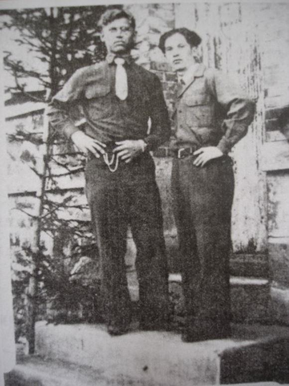
Deux maquisards russes160
Les différents détachements soviétiques de Meurthe-et-Moselle 161
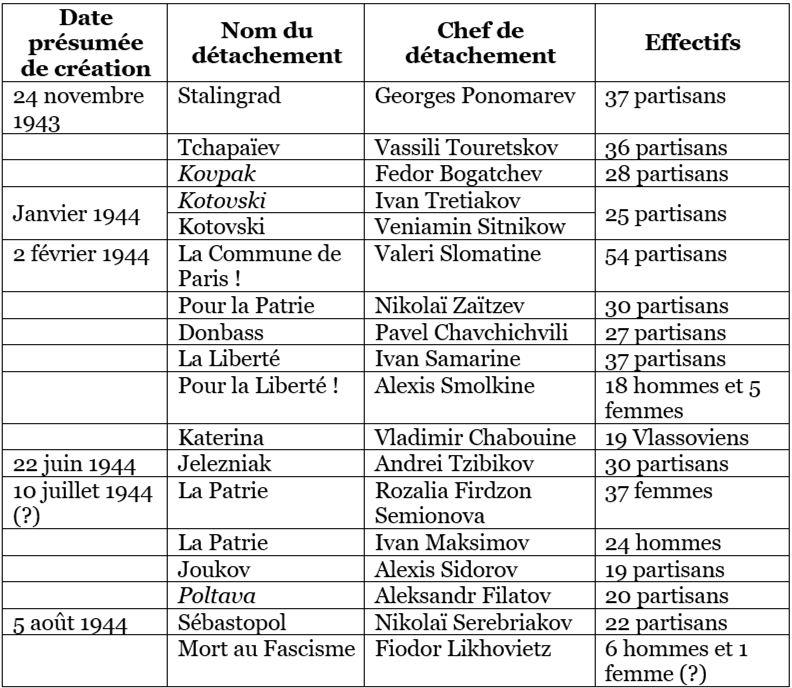Plus généralement, la présence de prisonniers soviétiques en Alsace et en Lorraine ne présenta pas un objectif militaire en soi. Hormis « Stalingrad » entré en activité en mars 1944 pour devenir « les rois du sabotage » du Pays-Haut meurthe-et-mosellan à la Haute-Marne162, leur action reste généralement méconnue163, à l’instar de leur passage carcéral. Les reconnaissances de la résistance devant aboutir au bombardement du complexe usinier de Hagondange-Woippy ne mentionnèrent aucunement la présence des camps environnants, pas plus que celle de travailleurs forcés164. De même, les journaux de marche de la IIIrd US Army, XXth US Corps ne font pas plus mention de leur existence. Il est vrai que, depuis la fin du mois d’août, les Allemands avaient pris soin d’évacuer leurs prisonniers vers l’Allemagne165, mais les installations n’avaient pas été détruites, ni dans les emprises industrielles, ni dans les camps annexes du KL-Natzweiler. Ainsi, à Thil, les baraquements et de nombreux matériels furent laissés sur place. L’armée américaine dépêcha une unité de la mission de renseignement ALSOS, chargée de mettre à jour les avancées de la science allemande, fin septembre 1944 et en janvier suivant166. Mais il n’est nulle trace de cette découverte dans les journaux de marche des 43rd et 90th Cavalry Reconnaissance Squadrons qui patrouillèrent dans la zone lors de l’avancée américaine et qui découvrirent le camp167.
Même silence des autorités du 43rd Squadron à Ottange, alors que s’y trouvaient encore les prisonniers, et même visite d’ALSOS168. De même, la libération des déportés de l’Est du camp de Nilvange, le 10 septembre 1944, par le 3rd Battalion, et la découverte de trois déportées polonaises à Thionville, par le major Falvey, du 358th Infantry Regiment, ne sont pas mentionnées169. L’historique de la campagne de Lorraine, édité en 1950 par la division historique de l’US Army, ne fait pas non plus état de la découverte des camps de Creutzwald, le 8 décembre 1944, par la 70th Infantry Division, de la 7th US Army, ou de Sarreguemines, six jours plus tard, par la 35th Infantry Division170.
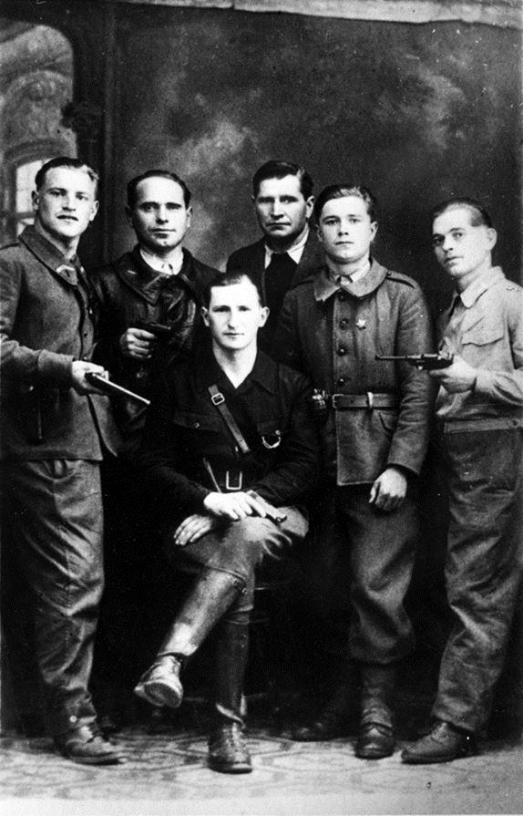D’ailleurs, c’est à peine si l’historique américain aborde les problèmes civils de la libération, mentionnant seulement le nombre important de réfugiés, parmi lesquels se trouvaient de nombreux « Russes, Polonais, Yougoslaves, qui avaient servi d’esclaves dans les mines et les usines aux Allemands171».
Leur rapatriement en Union soviétique
Ce flot de civils sur les routes lorraines, théoriquement interdites à tout trafic non militaire, ne fut pas sans entraver le déroulement des opérations. Les Civil Affairs Offices, attachés aux différentes divisions américaines, et la Military Police, durent opérer un tri parmi les quelques 33 000 réfugiés refluant vers les lignes américaines jusqu’au début de novembre 1944. Il fallait éviter que des espions allemands ne s’infiltrassent. Des ordres semblent avoir été donnés quant au regroupement des ressortissants des pays « libérés » par l’armée Rouge. À cet effet, une mission de rapatriement soviétique, commandée par le colonel Liskvevsky, était arrivée en France. Installée à Paris, elle dépendait de l’ambassadeur Bogomolov. En 1947, elle était commandée par le colonel Filatov172. Des officiers, comme le capitaine L. Lelikov, avaient été détachés auprès de l’US Army. Mais, les Américains restèrent discrets quant à leur travail et leurs méthodes173.
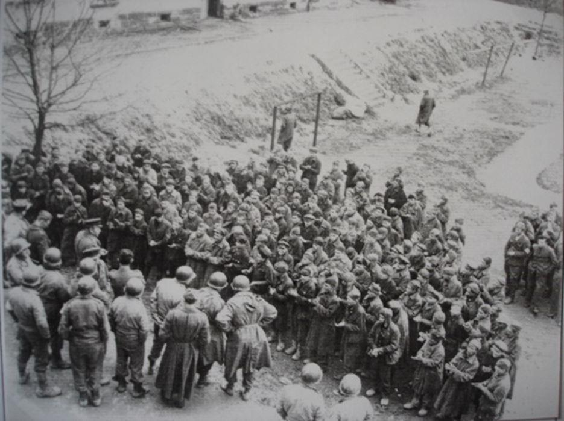
Le capitaine Filitov haranguant les prisonniers russes de Sarreguemines174
Dans le Pays-Haut, les Russes furent d’abord regroupés par les FFI dans une caserne de Saint-Mihiel, avant d’être remis à la garde de l’armée américaine175. D’autres centres de regroupement furent également installés à Nancy, Hayange et Sarrebourg. Après la libération, en janvier 1945, les réfugiés russes furent transférés dans quatre camps gérés par la Croix-Rouge. L’un d’eux, à Bourbonnes-les-Bains, accueillit les ressortissants soviétiques des départements de la Marne, la Haute-Marne, l’Aube, d’une partie de la Meuse et des Vosges176. Un autre avait été ouvert à Sarrebourg, dans la caserne Rabier, mise à disposition par les autorités militaires françaises. En août 1947, il était commandé par le lieutenant Kononenko, assisté, pour le ravitaillement, du sous-lieutenant Liptchansky et, pour l’encadrement, du commissaire politique Climenko. Les anciens prisonniers étaient installés dans les chambrées, disposant de douches, lavabos, lavoirs et sanitaires à tous les étages. Ils étaient nourris sainement et abondamment. Les enfants en bas âge, les nourrissons et les jeunes mamans recevaient du lait condensé. À partir de la fin de l’année 1946, Sarrebourg devint l’ultime séjour des Russes en partance pour l’Union soviétique. Les prisonniers commençaient aussi à laisser la place à des immigrés, russes ou des provinces polonaises annexées, résidant depuis plusieurs années en France, ayant parfois obtenus la nationalité française. Leur arrivée dans ce camp signifiait un prompt rapatriement, le temps de composer la rame et de déclamer quelque propagande pour les autorités, de rassembler leurs bagages pour ceux appelés maintenant « personnes déplacées 177 ». Ce vocable englobait encore les ressortissants des pays qui, « depuis Stettin jusqu’à Trieste », étaient passés dans l’orbite de Moscou. Au plus fort de la Guerre froide qui commençait, la France livrait des immigrés polonais et yougoslaves. « Leur départ [était] la conséquence d’une intense propagande qui [avait] été faite durant les derniers mois par des représentants [des gouvernements] (...) aidés par les Associations de patriotes (...). De gros avantages [avaient] été promis aux rapatriés. Les difficultés (...) d’existence en France, principalement dans le bassin industriel (logements insalubres, ravitaillement insuffisant pour le travail à effectuer, salaires modiques, etc...) ont également influé sur la décision des partants178».
Le 25 mai 1945, coordonnés par la mission de rapatriement soviétique, tous les Soviétiques avaient quittés la Meurthe-et-Moselle pour retourner dans leur pays où ils furent « filtrés » dans différents camps, d’abord en zone d’occupation soviétique d’Allemagne, puis dans l’Oural. Cette procédure était définie depuis le 11 mai. Leur attitude fut analysée pendant six mois, le certificat établi en octobre 1944 par le successeur de Trojan, le capitaine Vassily Taskin servant de base pour établir leur caractère de « partisans soviétiques ». Il est admis que le NKVD en réprima moins de 10 % dès leur arrivée et quelque 15 % dans les années qui suivirent179. Deux membres du détachement « Stalingrad » furent dans ce cas, l’un déclaré « traître à la patrie » à son retour, parce qu’il ne s’était évadé que le 24 août, l’autre condamné en septembre 1951 à dix ans pour avoir été fait prisonnier. Même Georges Ponomarev fut arrêté six mois en 1948, mais pour des faits ne concernant pas son action en France ; il était devenu un suspect idéal180.
Côté français, la 2e division, 2e bureau, des préfectures de Moselle, Meurthe-et-Moselle, Bas- et Haut-Rhin, soit leur bureau des étrangers, coordonna l’opération de retour en Union soviétique, les maires organisant les départs. Ils devaient veiller à ce que les partants fussent en règle avec le Trésor public et la Justice française, et s’assurer qu’aucun n’était devenu français181. Pour ces immigrés retournant vers leur lieu de naissance, les convois se formaient à Paris. Au départ, ils remettaient leur pièce d’identité française, leurs cartes d’alimentation et de textiles aux maires qui les retournaient en préfecture. À Sarrebourg, les ressortissants soviétiques se voyaient retirer leurs papiers français directement dans la cour du quartier Rabier par des gendarmes français182.
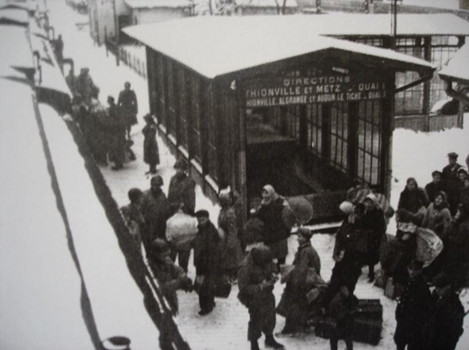
Ressortissants russes quittant Hayange le 24 janvier 1945 pour quatre camps de la Croix-Rouge183
Le voyage durait une semaine. Puis, c’était la plongée dans une vie qui s’était arrêtée lors de leur départ vers l’Ouest, dans un autre temps. Le journaliste du Lorrain ayant visité le camp de Sarrebourg s’interrogeait au moment de conclure son article : « Une grande question se pose, celle de la réadaptation de toutes ces familles brusquement transplantées en Russie soviétique (...). Nous nous sommes fait dire que les rapatriés volontaires pouvaient, avant leur départ, non seulement demander à être embauchés dans le métier dans lequel ils désiraient travailler, mais encore choisir leur lieu de résidence. Le voyage est gratuit, le logement assuré : on promet aux rapatriés des avances suffisantes pour la construction d’un toit, pour l’achat de terres, de cheptel et pour l’aménagement intérieur (...). Il s’agirait seulement de savoir, par la suite, si beaucoup de ces rapatriés ne regretteront pas tôt ou tard leur décision, en se souvenant de l’hospitalité agréable qu’ils ont reçue en France ».
La présence de prisonniers, de travailleurs requis et de déportés soviétiques en Lorraine reste un chapitre peu connu de l’histoire de la Seconde Guerre mondiale. Les monographies locales en font peu de cas et, quand elles en font, elles versent dans l’exagération propre à l’évocation mémorielle de cette époque. En outre, les sources semblent manquer, surtout dans les dépôts publics de Moselle et de Meurthe-et-Moselle. Le dépôt des archives de l’ARBED, privées comme héritées des sièges fusionnés, aux Archives nationales de Luxembourg et à l’Espace archives d’Arcelor-Mittal à Florange, peuvent révéler une utile documentation. Mais le désintérêt relatif des historiens pour l’histoire minière et sidérurgique du temps de guerre n’en a pas encore, sauf exceptions notables, fait émerger les richesses. Toutefois, il est à craindre que ces archives industrielles fussent épurées, à diverses époques depuis 1944, intentionnellement ou non. Quant aux archives allemandes ou aux résultats du renouveau historique russe post-soviétique, notamment l’ouvrage fondamental de Pavel Marcovich Polian184, ils sont resté peu accessibles aux historiens locaux, qui de toutes façons préférent s’en remettre aux témoignages, souvent obscurcis par la mémoire, d’acteurs de cette époque. Les départs « volontaires » des immigrés russes, polonais et yougoslaves restent ignorés. Aucune donnée chiffrée d’ensemble n’est parue jusqu’à ce jour185. À cela s’ajoutait le mutisme des autorités soviétiques à donner des renseignements sur ces retours de Lorraine. Les persécutions sous Staline justifient peut-être cette attitude. L’ère de changement, inaugurée par Gorbatchev, a permis l’ouverture d’archives186, mais la disparition de l’empire soviétique n’a pas changé l’attitude des autorités russes vis-à-vis de ces prisonniers. Cet aspect de l’histoire sociale lorraine est toujours à écrire.
La disparition de l’empire soviétique n’a pas permis de changement d’attitude des autorités russes vis-à-vis de ces prisonniers187. Cet aspect de l’histoire sociale lorraine est encore à écrire. Des axes de recherches ont été amorcés. L’Alsace et la Lorraine ont toujours accueilli des prisonniers de guerre. Depuis les guerres napoléoniennes, des dépôts se succèdent dans ces régions, parfois aux mêmes endroits. L’utilisation des soldats vaincus dans l’histoire lorraine est une chose commune depuis la Première Guerre mondiale188. « L’augmentation révolutionnaire de la mobilité des armées, qui constitue une des nouveautés essentielles de la Seconde guerre mondiale, eut pour conséquence une explosion du nombre de soldats faits prisonniers. Parmi eux, à l’âge de la guerre totale, les militaires de carrière constituaient une petite minorité par rapport aux mobilisés, issus de toutes les couches sociales. Leur absence affectait donc l’ensemble des sociétés en guerre. Par la durée de la captivité, leur expérience s’étale du début des hostilités jusqu’aux dernières libérations intervenues plusieurs années après la guerre ».
Seulement, la question des prisonniers de guerre soviétiques s’inscrit dans le cadre plus large de la politique raciale nazie, notamment dans les mouvements de populations originaires de l’Est du continent, et également dans celui du monde ouvrier de l’Ouest. Si le problème semble bien perçu en ce qui concerne l’industrie lorraine, qu’en est-il de celui de l’agriculture ? Et en Alsace ? Même si leur intérêt militaire ne semble qu’anecdotique, il ne peut être dissocié de l’étude, plus générale, des mouvements de résistance de ces deux régions annexées à l’Allemagne. C’est donc une histoire culturelle des prisonniers de guerre qu’il faut encore entreprendre.
Si l’on en croit Pieter Lagrou, dans son compte rendu du colloque de Comité international d’histoire de la Seconde Guerre mondiale de juin 2002, sur le retour des prisonniers de guerre, « l’histoire de la captivité en elle-même a fait l’objet de nombreuses études depuis de longues années ». On ne compte pourtant que quelques monographies locales189. Si l’on s’en reporte à la bibliographie de Christian Ingrao, même si elle ne vise pas l’exhaustivité 190, on ne trouve qu’un ouvrage sur la question ; et encore concerne-t-il la Première Guerre mondiale191.
G.A.
NOTES ET RÉFÉRENCES
1. Tetiana Pastushenko, « Le prisonnier de guerre comme personnage littéraire : du paria au “héros inconnu” », Cécile Vaissié (dir.), La fabrique de l’homme nouveau après Staline. Les arts et la culture dans le projet soviétique, Rennes, Presses universitaires de Rennes, 2016, p. 54.
2. Michel Hastings, « Crépuscule ouvrier et liturgie patrimoniale », Michel Dreyfus, Claude Pennetier, Nathalie Viet-Depaule (dir.), La part des militants, Paris, l’Atelier, 1996, p. 45.
3. Cf. Edgar Morin, L’esprit du temps. Névrose, Paris, Grasset, 1962.
4. Francois Cochet, Soldats sans armes. La captivité de guerre : une approche culturelle, Bruxelles, Bruylant, 1998 ; Odon Abbal, Soldats oubliés. Les prisonniers de guerre français, Bez-et-Esparon, Études et communications, 2001 ; Fréderic Médard, Les Prisonniers de guerre en 1914-1918. Acteurs méconnus de la Grande Guerre, Paris, 14-18 Éditions, 2010 ; Annette Becker, Oubliés de la Grande guerre. Humanitaire et culture de guerre 1914-1918 : populations occupées, déportés civils, prisonniers de guerre, Paris, Noêsis, 2012.
5. Actes du colloque international sur la logistique des armées au combat durant la Première Guerre Mondiale, Verdun, 6-8 juin 1980, Nancy, Presses Universitaires de Nancy, 1984, p. 240-259. Cf. le colonel Jan Oborski, « Les prisonniers de guerre (1914-1918) », La Belgique militaire, n° 3, juin 1975, p. 24-28.
6. Stuttgart, Deutsche Verlags Anstalt, 1978, 2e éd. Bonn, J.H.W. Dietz, 1991. Cf. Ibid., « Они нам не товарищи [Ce ne sont pas nos camarades] », Военно-Исторический Журнал [Journal historique militaire], 1992, n° 1/10, p. 50-58 et « Les prisonniers maudits de la guerre 1939-1945 », L’Histoire, no 59, septembre 1983, p. 10-19.
7. Ulrich Herbert, A History of Foreign Labor in Germany, 1880-1980: Seasonal Workers/forced Labourers/guest Workers (Social History, Popular Culture and Politics in Germany), Chicago, The University of Michigan Press, 1991, trad. Geschichte der Ausländerpolitik in Deutschland. Saisonarbeiter, Zwangsarbeiter, Gastarbeiter, Flüchtlinge, Munich, C.H. Beck, 2001.
8. Franck Tison, « Les prisonniers de guerre en Provence durant la première guerre mondiale : du rejet à l’intérêt bien compris », Provence historique, n° 64/255, janvier-juin 2014, p. 3-39 ; Philippe Sunou, Les Prisonniers de guerre allemands en Belgique et la Bataille du charbon, 1945-1947, Bruxelles, Musée royal de l’Armée, 1980 ; Mikhail Egorovich Erin, « Советские военнопленные в германии в годы второй мировой войны » [Les prisonniers de guerre soviétiques en Allemagne pendant le Seconde Guerre mondiale], Вопросы Истории [Questions d’histoire], 1995, vol. 11-12, p. 140-151 ; Sergei Aleksandrovich Il’enkov, Viktor Vasil’evich Mukhin, Pavel Markovich Polian, « Трофейные немецкие картотеки советских военнопленных как исторический источник » [Les fichiers allemands concernant les prisonniers de guerre soviétiques comme source historique], Новая и новейшая история [Histoire nouvelle et récente], 2000, n° 2, p. 147-155 ; Pavel Polian (trad. Elaine MacKinnon), « First victims of the holocaust: Soviet-Jewish prisoners of war in German captivity », Kritika. Explorations in Russian and Eurasian History, 2005, vol. 6, n° 4, p. 763-787 ; Reinhard Otto, Rolf Keller, Jens Nagel, « Sowjetische Kriegsgefangene in deutschem Gewahrsam 1941-1945. Zahlen und Dimensionen », Vierteljahrshefte für Zeitgeschichte, vol. 56/4, 2008, p. 557-602...
9. Gérard Henigfeld, « Les camps de Boulay et du Ban-Saint-Jean », Les Cahiers des Pays de la Nied, n° 18, décembre 1992, p. 30-42 ; Paul Bajetti, « Les camps de la faim : Ban-Saint-Jean et Boulay », Les Cahiers des Pays de la Nied, n° 29, juin 1998, p. 27-52 ; Gabriel Becker, Le camp du Ban-Saint-Jean, chez l’auteur à Ottonville ; Philippe Wilmouth, Les camps de prisonniers de guerre en Moselle 1940-1948, Saint-Cyr-sur-Loire, Ed. Alan Sutton, 2009.
10. Pascal Brenneur, « Les prisonniers russes dans les mines de fer lorraines (1941-1944) », Mercy Magazine, no 73-75, 20 janvier, 3 février et 3 mars 1987, repris dans Les cahiers lorrains, no 1, 1989, p. 39-47.
11. Gérald Arboit, « L’utilisation de prisonniers de guerre russes dans l’industrie ferrifère de la Lorraine allemande pendant la Première Guerre mondiale », Guerres mondiales et conflits contemporains, 2001/2-3, n° 202-203, p. 65-79.
12. Fernando Ricardo Baptista Barra, « Les Ostarbeiter dans la sidérurgie luxembourgeoise (1942-1945) », Charles Barthel/Josée Kirps, Terres rouges. Histoire de la sidérurgie luxembourgeoise, 1, Luxembourg, Centre d’études et de recherche européennes Robert Schuman/Archives nationales du Luxembourg, 2009, p. 16-70.
13. Stahl und Eisen du 8 octobre 1916, p. 959.
14. Copies des décrets in Archives Départementales de la Moselle (ADM), 16 AL 11 et 11 AL 60.
15. Ibid., 11 AL 60.
16. Archives privées de l’auteur.
17. Ulrich Herbert, Geschichte…, op. cit., p. 130-138 ; Joseph Billig, « Le rôle des prisonniers de guerre dans l’économie du Reich », Revue d’Histoire de la Deuxième Guerre mondiale, n° 37, janvier 1960, p. 65-66.
18. Pascal Brenneur, op. cit., p. 43-44 ; Fernando Ricardo Baptista Barra, op. cit., p. 28.
19. Ainsi, quarante-cinq d’entre-eux furent placés à Tressange [ADM, 16 AL 11, lettre du Kreisdirektor de Didenhoffen-West à Gemmingen-Hornberg du 29 juin 1916].
20. Gérard Walter, L’évolution du problème de la main d’œuvre dans la métallurgie de la Lorraine désannexée, Mâcon, 1935, p. 186 et Claude Prêcheur, La Lorraine sidérurgique, Paris, Editions Sabry, 1959, p. 99.
21. Carte de l’auteur d’après Philippe Wilmouth, Les camps de prisonniers de guerre en Moselle, 1940-1948, Saint-Cyr-sur-Loire, Alan Sutton, 2009.
22. Gérard Henigfeld, « Les camps de Boulay et du Ban-Saint-Jean », Les Cahiers des Pays de la Nied, n° 18, décembre 1992, p. 30-42, Paul Bajetti, « Les camps de la faim : Ban-Saint-Jean et Boulay », Les Cahiers des Pays de la Nied, n° 29, juin 1998, p. 27-52 et Gabriel Becker, Le camp du Ban-Saint-Jean, chez l’auteur à Ottonville.
26. François Roth, La Lorraine annexée. Étude sur la Présidence de Lorraine dans l’Empire allemand (1870-1918), Thèse, Lettres, 1973, p. 609-610.
27. Ulrich Herbert, op. cit., p. 141-142.
28. Marcel Neigert, Internements et déportation en Moselle, 1940-1945, Metz, Centre de recherches en relations internationales de l’université, 1979.
29. National Archives and Record Administration (NARA), RG 111 SC. Ces prisonniers venant d’être libérés par les Américains étaient partiellement vêtus d’effets militaires allemands.
30. Pascal Brenneur, « Les nécropoles soviétiques en Lorraine », in Le Pays Lorrain, no1, 1989, p. 48 et Le Républicain Lorrain des 17 et 24 décembre 1983.
31. Ibid., p. 49. Une enquête de gendarmerie, en 1945-1946, estima que 700 à 800 Russes décédèrent dans ce camp.
32. L’un d’eux fut jugé par le tribunal militaire de Metz, fin mai 1947, aux travaux forcés à perpétuité pour avoir assommé à coups de crosse, puis exécuté d’une balle un prisonnier russe [Le Lorrain du 25 mai 1947].
33. Léon Burger, Le groupe « Mario »..., op.cit., p. 73. L’auteur des reproductions était un photographe de Hagondange, Philippe Moser.
34. Témoignage de Henri Schoenhentz à l’auteur du 25 juin 1996.
35. A. Hohnadel, R. Varoqui, Tourisme militaire dans le plus gros ouvrage de la Ligne Maginot : le fort du Hackenberg, Veckring, Amifort, 1990, p. 27.
36. NARA, op.cit.. Ces trois hommes sont vêtus de tenues allemandes.
37. Reinhard Otto, Rolf Keller, Jens Nagel, op. cit., p. 577 ; Pascal Brenneur, op.cit., p. 51, sur la base du Républicain Lorrain des 9, 12, 17 et 20 février 1980, 23 janvier et 16 février 1987, validait l’hypothèse des 204 fosses communes et des 20 000 morts dont parlèrent Le Messin du 31 octobre, Le Lorrain, Le Courrier de Metz et Le Républicain lorrain du 16 novembre 1945.
38. NARA, op.cit..
39. L’étude de Pascal Brenneur, « Les prisonniers russes dans les mines de fer lorraines (1941-1944) », in Mercy Magazine, nos73 (20 janvier 1987), 74 (3 février 1987), 75 (3 mars 1987), repris dans Les cahiers lorrains, no1, 1989, pp. 39-47, reste la plus complète menée jusqu’à présent. Malgré le titre, elle est consacrée aux prisonniers affectés à la mine de Saint-Pierremont, à Mancieulles (Meurthe-et-Moselle). Cette étude spécifique se fonde sur les archives privées de la SA des Mines de Saint-Pierremont.
40. 150 Russes travaillaient dans ces deux dernières mines [Témoignage de Lambert Ortolani, in Serge Bonnet, L’Homme de fer, II (1930-1959), Nancy, Centre d’études sociologiques, 1977, p. 196]. Jacques Dupâquier, qui échappait au Service du travail obligatoire en étant employé au roulage de la mine de Joudreville, signale la présence de 300 prisonniers soviétiques pour cette seule mine [« Un normalien dans les mines de fer », in André Montagne, Edouard Tincelin, Jacques Astier et Jean-Arthur Varoqueaux, Les mines de fer de Lorraine, Paris, UIMM, 1992, p. 119].
41. René Caboz, La bataille de Thionville. 25 août-25 décembre 1944, Sarreguemines, Pierron, 1994, p. 92.
42. A compter de 1943 [« Le camp de Suzange », in Les Amis d’Adrien Printz, no5, 1992, p. 30], ce camp accueillit des prisonniers ukrainiens [Pierre Denis, op.cit., p. 383].
43. Marcel et Marie-Louise Kaercher-Régnery, Knutange, son histoire, Knutange, Imp. Klein, 1987, p. 535.
44. Jacques Vincent, « Souvenirs de guerre d’un français sous l’uniforme américain. Du débarquement (6 juin 1944) à sa démobilisation (15 août 1945) », in La Revue lorraine populaire, juillet 1991, p. 249.
45. Témoignage de Richard Cottlenga à l’auteur du 1er septembre 1998.
46. 84 Russes, qualifiés abusivement d’Ostarbeiter, furent employés de décembre 1942 à septembre 1944 à la mine Saint-Michel. Arrivés par six convois, entre le 11 décembre 1942 et le 23 octobre 1943, 11 furent évacués le 1er septembre 1944, 40 furent libérés le 17 octobre suivant ; 29 avaient été renvoyés, quatre n’avaient pas de date de sortie, vraisemblablement morts [Archives privées, cahier des entrées et sorties de personnel d’octobre 1940 à avril 1952]. Voir aussi Gérald Arboit, Terres Rouges. Le fer et le feu à Audun-le-Tiche, Audun-le-Tiche, C.E. ARBED, 1997, pp. 83-84, et Eugène Gaspard, Alain Simmer, Le canton du fer, Thionville, 1978, pp. 210-213.
47. 80 prisonniers, auxquels s’ajoutaient leurs familles, soit 150 personnes [« Aumetz. 50e Anniversaire de la Libération. 10 septembre 1944/1994 », pp. 45 et 88].
48. Archives départementales de Meurthe-et-Moselle, Nancy (ADMM), rapport de l’intendant de la Police nationale au Préfet du 24 février 1944.
49. 67 prisonniers arrivèrent en janvier 1943. Ils furent suivis de 45 en juin, 120 autres (âgés de dix-neuf à quarante-huit ans) en octobre, 135 en janvier 1944 et 62 en avril. Le camp exista dix-neuf mois durant. Voir Pascal Brenneur, op.cit..
50. Les 90 prisonniers étaient répartis entre les mines d’Anderny-Chevillon et de Sancy.
51. 250 prisonniers, de dix-huit à quarante-trois ans, arrivèrent le 5 septembre 1942.
52. Respectivement 120, 50, 120 et 90 Russes.
53. Voir les témoignages d’André Lamotte et de Joseph Montarello, in Ibid., p. 195.
54. Voir le témoignage d’Edouard Janowski, in Ibid., p. 196.
55. Voir Le Républicain lorrain des 19 août 1979 et 5 septembre 1987, et la liste des militaires russes inhumés au cimetière national de Valleroy, guerre de 1939-1945 édité par la ville de Valleroy et la direction départementale du secrétariat d’État aux Anciens combattants de Nancy le 20 juillet 1971.
56. Adrien Printz, Hayange d’un siècle à l’autre, Sérémange, Impr. Marchal Florange, 1980, p. 204 et Jean-Luc Périoli, Le mineur de fer au quotidien. Mines d’Hayange, Knutange, Ed. Fentsch vallée, 1995, p. 66. Se fondant sur les rapports d’exploitation des mines d’Hayange, pour la période 1940-1944, M. Périoli établit que 224 prisonniers (effectif optimal) furent employés entre le 1er janvier 1943 et le 31 août 1944.
57. Gérald Arboit, « Ivan Trojan et les comités d’évasion soviétiques en Lorraine », in Thierry Grosbois (dir.), Résistance contre le nazisme, maquisards et partisans sur le front occidental et soviétique, Beau Bassin, Éditions universitaires européennes, 2020, p. 13-72.
58. Российский государственный архив социально-политической истории [Archives d’histoire politique et sociale de la Fédération de Russie], Moscou (RGASPI), Fond (F.) 553, opis (op.) 1, delo (d.) 2, Trojan, 31 mai 1944. Seule l’identification est nôtre ; Gérald Arboit, op. cit., p. 38.
59. Service historique de la Défense, Guerre, Vincennes (SHD/G), 16 P 482 066, Bataillon Inter-alliés, 25 novembre 1944.
60. Ibid., détachements Stalingrad et Gelesniack, 16 décembre 1944.
61. Pierre Schill, « Burger Jean, Marie, Charles (“Mario” dans la Résistance) », http://maitron-en-ligne.univ-paris1.fr/spip.php?article18191.
62. BundesArchiv, Berlin-Lichterfelde, R 70, Polizeidienststellen in Lothringen, 11, Schmidt au Reichssicherheitshauptamt, 18 juillet 1944 ; Cédric Neveu, La Gestapo en Moselle. Une police au cœur de la répression nazie, Metz, Serpenoise, 2012, p. 88, 230-231.
63. Robert Steegmann, Struthof. Le KL-Natweiler et ses kommandos : une nébuleuse concentrationnaire des deux côtés du Rhin 1941-1945, Strasbourg, La Nuée Bleue, 2005, p. 48.
64. ADMM, W 1059/7, rapport des RG de Briey du 30 mars 1944.
65. Entre le 15 février 1943 et le 11 août 1944, Le Républicain lorrain du 27 novembre 2007.
66. ADMM, W 1059/7, rapport du 30 mars 1944, AODACVG, « table contenant dix naissances (...), close et arrêtée ce vingt-quatre janvier mil neuf cent quarante-cinq par nous François René, maire d’Errouville » et Le Républicain lorrain du 28 avril 1979.
67. Ibid., rapport du commissaire spécial des RG, à Longwy, du 28 avril 1944.
68. Archives privées de Nadiejda Lissoviets, Minsk, Ukraine.
69. Eugène Gaspard, op.cit., pp. 121-144.
70. BundesArchiv (Coblence), R7, 1214, f. 1.
71. Témoignage de Jean-Pierre Geisel, dans Eugène Gaspard, op.cit., p. 132.
72. Robert Steegmann, op. cit., p. 70.
73. Témoignage de Paul Winum à l’auteur du 27 juin 1996.
74. Marcel Neigert, op.cit., p. 40. Il s’agissait de condamnées politiques [Archives privées, lettre du directeur de l’usine de Hagondange au directeur Cordes à Hayange du 4 juin 1941, sur l’édification d’un camp de 440 places pour des condamnés au travail]
82. Archives de l’Office départemental des Anciens combattants et Victimes de guerre (AODACVG, Nancy), doc. Arolsen, liste nominative des prisonniers adressée par Natzwiller à Thil du 29 juin 1944 ; Eugène Gaspard, Les travaux du IIIe Reich entre Alzette et Fensch, Thionville, Gérard Klopp, 1992, pp. 13-120. Gérald Arboit, « Un village dans la tourmente : le 10 septembre 1944 à Audun-le-Tiche », in Le Pays-Haut, no3-4, 1995, pp. 49-50.
83. Archives de l’Office départemental des Anciens combattants et Victimes de guerre (AODACVG, Nancy), doc. Arolsen, liste nominative des prisonniers adressée par Natzwiller à Thil du 29 juin 1944.
84. Archives départementales de la Moselle (ADM), J 7226, Procès du Struthof. En trois ans et demi, quatre mille cinq cents Polonais y moururent ; Robert Steegmann, op. cit., p. 43-223.
85. Vladimir Claude Fišera, doc. « Le témoignage du docteur Leo Fritz sur les crimes nazis commis dans le camp de concentration de Natzwiller-Struthof. Traduction, présentation et notes d’après l’édition yougoslave de Dragoljub Kocic », in Revue d’Alsace, t. 114, 1988, pp. 231-no17 et 235-no28.
86. Jean-Claude Richez, « Le camp du Struthof. L’horreur dans les Vosges », in Saisons d’Alsace, no121, « La guerre totale-1943 », pp. 58-63 (et Encyclopédie d’Alsace, vol. 12, pp. 7164-7165). Charles Bene, L’Alsace dans les griffes nazies. V. Organisations policières nazies. Prisons et camps de déportations en Alsace, Raon l’Etape, Fetzer SA, 1980, p. 60.
87. La liste des matricules du camp contient 4 336 entrées, mais, comme le note Marcel Neigert, op. cit., p. 3, il n’est pas rare de trouver deux ou trois fois le même nom. Il y avait, en outre, quatre cent soixante-quatre internés mosellans.
88. Marcel Neigert, op.cit., p. 62. Voir Léon Burger, Le groupe « Mario ». Une page de la résistance lorraine, Metz, Imp. Louis Hellenbrand, 1985, p. 110.
89. Pierre Denis, La libération de Metz, Metz, Ed. Serpenoise, 1994, p. 28-n. 34.
90. Léon Burger, Tragédie mosellane : le fort de Queuleu, Metz, Imp. Louis Hellenbrand, 1973, p. 83.
91. C’était surtout vrai pour les Serbes et les Polonais qui travaillaient pour l’Ostland. Voir la thèse de doctorat de Jacques Mièvre, L’Ostland en France durant la Seconde uerre mondiale : une tentative de colonisation agraire allemande en zone interdite, Nancy, publiée in Annales de l’Est. Mémoire no46, 1973. L’auteur a tendance à confondre déportés et Ostarbeiter, et s’étonne de voir la demande d’un père de faire venir sa fille, de Pologne, satisfaite par les autorités allemandes.
92. Archives privées, circulaire de la Chambre syndicale du 31 août 1942, relative à l’affectation et l’encadrement à prévoir pour les prisonniers russes affectés dans les différents sièges de Meurthe-et-Moselle.
93. Archives privées, Stammrole Hilfspersonal Rothe Erde, et cahier des entrées et sorties de personnel, octobre 1940-avril 1952 et Gérald Arboit, op.cit., p. 83. Le Werkschutz audunois compta treize hommes, dont trois interprètes ukrainiens, à compter d’août 1943. Toutefois, entre le 1er septembre et le 28 novembre 1944, la Société minière des Terres Rouges licencia 25 gardes, mêlés de près ou de loin à la surveillance des Russes. Seuls quelques-uns les moins impliqués, Luxembourgeois ou de la région d’Audun-le-Tiche, retrouvèrent leur emploi à la mine. Les autres, Allemands ou Alsaciens, durent aller chercher du travail ailleurs.
94. Archives privées, rapport de M. Régnier, p. 2, annexe d’une lettre de la section Est de la chambre syndicale, Nancy, du 5 octobre 1942.
95. La commission était présidée par M. Régnier, directeur du service des mines de la Société des Hauts-Fourneaux de Saulnes. Elle visita le « camp de 250 prisonniers destinés aux mines ORNE et MOYEUVRE » et recueillit « des renseignements sur une mine lorraine qui employait 80 prisonniers » (Archives privées, rapport de M. Régnier, p. 1, op.cit.).
96. J. Billig, op.cit., p. 64.
97. « Aumetz... », op.cit..
98. Registre des décès de la ville de Knutange, in Marcel et Marie-Louise Kaercher-Régnery, op.cit..
99. Témoignage de Jacques Dupâquier, op.cit..
100. Témoignage de Richard Cottlenga à l’auteur du 1er septembre 1998 et Gérald Arboit, op.cit., p. 83.
101. NARA, op.cit.. Cette photo, extraite du reportage de James W. Todd, montre le Medic T/5 Max Freeman, du 274th Collecting Detachment, le 5 mars 1945.
102. Se rapporter au témoignage de Henri Helce, prisonnier de guerre français dans un stalag du Hanovre et qui côtoya des prisonniers russes [Dans les geôles d’Hitler, Nancy, Imp. Lemoy, 1945, pp. 118-120].
103. Voir la circulaire du 26 août 1942 du Beauftragte de Bouligny, cité par Pascal Brenneur, op.cit..
104. Archives privées, rapport de M. Régnier, p. 2, op.cit..
105. 5 % du contingent de janvier 1943, 17 % un mois plus tard, 35 % en janvier 1944 et 43 % en avril [Ibid.].
106. AODACVG, « table contenant (...) vingt-six décès, close et arrêtée ce vingt-quatre janvier mil neuf cent quarante-cinq par nous François René, maire d’Errouville ».
107. Témoignage de Jacques Dupâquier, op.cit., et « Aumetz... », op.cit.. Voir le menu destiné aux travailleurs les plus lourds (Schwerste Arbeiter) dans le rapport de la commission Régnier [op.cit., p. 1].
108. Archives privées, rapport de M. Régnier, op.cit..
109. Pascal Brenneur, op.cit..
110. AODACVG, doc. Arolsen, op.cit..
111. Il n’y avait que 5,6 % de mineurs, tandis que les ouvriers de la grande industrie représentaient 70,3 % et les artisans 22 % de l’effectif total du camp [Ibid., liste des matricules].
112. « Aumetz... », op.cit., p. 88.
113. En plus de Sadwirni, il y eut Nikolay Koschelew, pendu le 11 février 1944 [Registre des décès de la ville de Knutange, in Marcel et Marie-Louise Kaercher-Régnery, op.cit.].
114. Feder Autuschin, décédé par accident dans le camp Victor, le 23 juin 1944 [Ibid.].
115. Jean-Luc Périoli, op.cit..
116. Témoignage de Jacques Dupâquier, op.cit..
117. Adrien Printz, op.cit., p. 204.
118. Pascal Brenneur est, en effet, silencieux à ce sujet.
119. Claude Prêcheur, op.cit., p. 107.
120. Archives privées, rapport de M. Régnier, op.cit., pp. 2-3.
121. Ibid., rapport de la Chambre syndicale des mines de fer de France du 5 août 1942.
122. Ibid., rapport de M. Régnier, op.cit., pp. 2-3.
123. André Montagne, Edouard Tincelin, Jacques Astier et Jean-Arthur Varoqueaux, op.cit., p. 91 et archives privées, « Production des Mines Montrouge et Saint-Michel depuis 1911 ».
124. Témoignage d’Edouard Janowski, sur le camp de Giraumont, in Serge Bonnet, op.cit., p. 196 ; Pascal Brenneur en affirmant que les Ukrainiens se gardaient eux-mêmes, le témoin entend qu’ils n’étaient pas gardés par les Allemands.
125. Pour d’autres exemples de cette monnaie, voir Eugène Gaspard, op.cit., p. 139
126. Op.cit., p. 3.
127. AODACVG, rôle des ouvriers russes employés à Thil, mairie d’Errouville.
128. Les Allemands saisissaient ainsi 15% du salaire des ouvriers et des mineurs d’origine polonaise [Témoignage de Léon Misiak à l’auteur du 18 janvier 1997]. Les Italiens et les Alsaciens-Mosellans ne pouvaient percevoir d’allocations familiales s’ils n’étaient pas inscrits dans une formation nationale, fasciste pour les uns, Volksgemeinschaft pour les autres.
129. Dessin de Madeleine Noël, d’après un objet du Dr. Paul Robaux de Nancy [Pascal Brenneur, op.cit., p. 42].
130. Archives privées, rapport de M. Régnier, p. 3, op.cit..
131. ADMM, W 1059/7, rapport du 28 avril 1944.
132. Archives privées, circulaire du Generalbeauftragte-Gruppe III (Orne-Fentsch) du 24 août 1942.
133. Témoignage de Richard Cottlenga à l’auteur du 1er septembre 1998.
134. Témoignage de Paul Winum à l’auteur du 27 juin 1996.
135. Témoignage de Léon Misiak à l’auteur du 18 janvier 1997.
136. « Aumetz, ... » op.cit., p. 88.
137. ADMM, W 1059/7, rapports des RG de Briey, du 30 mars 1944, et du préfet délégué de Meurthe-et-Moselle au préfet régional, du 26 avril 1944.
138. « Aumetz, ... » op.cit., p. 45.
139. Témoignage de Jacques Dupâquier, op.cit..
140. Léon Burger, Le groupe « Mario »..., op.cit., p. 74.
141. ADMM, W 1059/7, rapport du commissaire spécial des RG, à Longwy, du 28 avril 1944.
142. Sentence du tribunal allemand de Première instance de Metz du 13 décembre 1944, citée par Pierre Denis, op.cit., p. 356.
143. Christian Streit, Keine Kamaraden..., op.cit., p. 17. Voir aussi le témoignage de Jacques Dupâquier, op.cit.. Deux gendarmes allemands de Thionville furent condamnés aux travaux forcés, l’adjudant à perpétuité et le lieutenant à dix ans, pour avoir assassiné deux prisonniers évadés [Le Lorrain des 11 et 17 octobre 1947].
144. Pascal Brenneur, op.cit..
145. Trois Russes, Gregory Bolschakov, de Smolensk, d’Ewgen Folmatch, de Saint Mironovska, et de Jaroslaw Gomassink, de Moscou. [Eugène Gaspard, Alain Simmer, op.cit., p. 212, d’après deux lettres des 1er et 11 septembre 1944].
146. 156 prisonniers, surtout russes, mais aussi hongrois, bulgares et yougoslaves, s’évadèrent pendant les transferts entre le camp et Thil [Témoignage d’André Battin, cité par Eugène Gaspard, op.cit., p. 28].
147. J. Collin, J.P. Harbullot, op.cit., p. 179.
148. Léon Burger, op.cit., p. 76.
149. RGASPI, F. 553, op. 1, d. 2, Troyan, 31 mai 1944 ; ADMM, WM 142, Renseignements généraux, Briey, 1er avril 1944 ; SHD/G, 16 P 482 066, détachements Stalingrad et Gelesniack, 16 décembre 1944 ; cf. Gérald Arboit, « Ivan Trojan… », p. 40.
150. En 1947, il fut condamné à deux mois de prison, six mille francs d’amende et dix ans de dégradation nationale [Le Lorrain du 5 février 1947].
151. Trois Russes vécurent, de 1943 à début 1945, dans le bois de Saint-Jean les Buzy, près d’une ferme de l’Ostland, ou ce couple se cacha sous des branchages à Morgelin, près d’Etain [C. Collin, J. P. Harbullot, Histoire de la résistance de la Meuse. Avoir 20 ans en 1940 en zone interdite, Epinal, La Table Ronde, 1986, p. 34].
152. Pascal Brenneur, « Les prisonniers russes évadés en Lorraine durant l’occupation allemande de la Deuxième Guerre mondiale », in Le Pays-Haut, no1-2, 1988, p. 30.
153. https://maitron.fr/spip.php?article219662, notice PLINIO Ilario [LARIO Plinio dit]. Autres pseudonymes : Luigi Cansian/Cascian, Raymond Falco/Falcon, Brunetto. par Gérald Arboit, version mise en ligne le 20 octobre 2019, dernière modification le 2 décembre 2020.
154. Tel ce groupe de Russes entassant des bottes de paille contre de la nourriture et une cache [Pascal Brenneur, op.cit., p. 32].
155. Ainsi à Troyon, près de Fresnes-en-Woëvre, nécessitant une action répressive de la résistance locale [René Boulanger, La vie et les combattants de la résistance en Lorraine : les hommes de la Liberté, Verdun, Imp. Lefèvre, 1985, p. 126].
156. Voir la liste reproduite dans Jean-Louis Etienne, La Lorraine dans la tourmente, Nancy, CRDP, 1984, doc. 17. Il comptait deux commissaires politiques Macare Stych et André Tsibikov. Voir aussi C. Collin et J.P. Harbullot, op.cit., pp. 34, 135 et 144, et Pascal Brenneur, op.cit., p. 37.
157. Gérald Arboit, « Ivan Trojan… », p. 40.
158. C. Collin et J.P. Harbullot, op.cit., pp. 170, 179 et 197.
159. Voir Maurice Noël, « Carte des actions de la résistance dans le Pays-Haut (1943-1944) », in Le Pays-Haut, no3-4, 1983, p. 225. Sur les actions dans le secteur de Briey, voir Pierre de Préval, Sabotages et guérilla, Paris, Berger-Levrault, 1946, pp. 119-143.
160. Photographie de deux partisans russes (à gauche, Alexandre Petrovich). Au dos, dédicace manuscrite en russe : « En souvenir des gens les meilleurs de la population de la région de la Meuse. Aux sympathisants et à tous ceux qui contribuèrent à l’action des partisans français de l’Est de la France. De la part de l’organisation du détachement des partisans russes Tchapaiev. Alexandre Simeon Petrovich, le 27-3-45 » [Pascal Brenneur, op.cit., p. 35].
161. Archives du Musée de la Résistance nationale, Champigny-sur- Marne, Fonds René Roussel, 8, Appels à départements, Détachements de partisans soviétiques à l’Est de la France (région C) ; Gaston Laroche, On les nommait des étrangers… Les immigrés dans la Résistance, Paris, Éditeurs français réunis, 1965, p. 266-267. Les maquis ukrainiens sont signalés en italique.
162. ADMM, WM 322, Renseignements généraux, Briey, 24 mars 1942 ; SHD/G, 16 P 482 066, détachements Stalingrad et Gelesniack, 16 décembre 1944.
163. Cf. Claude Collin, L’été des partisans. Les FTP et l’organisation de la résistance en Meuse, Nancy, Presses universitaires, 1992, p. 97 ; Ibid., « Étrangers et nos frères pourtant » (Aragon, l’Affiche rouge) contribution à l’histoire des francs-tireurs et partisans de la main-d’œuvre immigrée », Guerres mondiales et conflits contemporains, n° 174, avril 1994, p. 169-170.
164. Carte de Hubert Glesener, envoyée à Londres pour préparer les bombardements, Musée national de la Résistance d’Esch-sur-Alzette.
165. Saint-Pierremont au printemps 1944 (les Russes furent remplacés par des Nord-Africains), Thil et Audun-le-Tiche le 31 août 1944.
166. NARA, RG 319, « Visit to underground V-1 manufacturing plant » du 23 septembre 1944.
167. Ibid., RG 407, « After Action report, 3rd Cavalry Group » de septembre 1944.
168. Jacques Vincent, op.cit., et Eugène Gaspard, op.cit., p. 132.
169. René Caboz, op.cit., pp. 92, 98.
170. Anthony Kemp, Lorraine Album Mémorial. 31 août 1944-15 mars 1945. Lorraine Journal Picturial, Bayeux/Metz, Heimdal/Serpenoise, 1985, pp. 426 et 438.
171. Hugh M. Cole, US Army in World War II. The European Theater of Operations. The Lorraine Campaign, Washington, 1950, p. 598.
172. Son adjoint s’appelait Romachko. Quant à Bogomolov, il avait été remplacé par le consul général Abramov [Le Lorrain, 30 août 1947].
173. Nicholas Bethel, Le dernier secret : 1945, comment les alliés livrèrent deux millions de Russes à Staline, Paris, Seuil, 1975.
174. NARA, RG 111 SC.
175. ADMM, WM 1174, lettre du préfet de la Meuse au commissaire de la République à Nancy du 17 octobre 1944.
176. Gilbert Grandval, A. Jean Colin, Libération de l’est de la France, Paris, Hachette, 1974, p. 225.
177. Jack, « Sarrebourg : centre de rapatriement pour les Biélo-Russes », Le Lorrain du 30 août 1947.
178. ADMM, W 1053/17, note blanche du commissaire de police des RG de Longwy du 30 juillet 1947.
179. Igor Vasilievich Pykhalov, Великая Оболганная война [La Grande Guerre calomniée], Moscou, Yauza, 2005, p. 122.
180. Tamara Fedorovna Gorovaya, « Глава 8. Рost scriptum о советских маки 2 » (chapitre 8 Post-scriptum sur les maquis soviétiques 2) et « Глава 9. На Родину, с Францией в сердце 1 » (chapitre 9 Sur la Patrie, avec la France au cœur 1), https://www.proza.ru/2015/07/06/1005 et https://www.proza.ru/2017/08/24/1397
181. Archives municipales d’Audun-le-Tiche, lettres du secrétaire en chef délégué de la sous-préfecture de Thionville au maire d’Audun-le-Tiche des 6 novembre 1946, 6 août, 12 et 29 septembre 1947.
182. Le Lorrain du 30 août 1947.
183. NARA, op.cit..
184. Жертвы двух диктатур. Советские военнопленные и остарбайтеры в Третьем рейхе и их репатриация [Les victimes des deux dictatures. Prisonniers de guerre soviétiques et Ostarbeiters sous le Troisième Reich et leur rapatriement], Moscou, Zirz, 1996, rééd. 2002.
185. Lorsque Jack visite le camp de Sarrebourg, deux convois de 800 ressortissants russes étaint déjà partis et un troisième de 900 autres allait se mettre en route. Le commissaire des RG de Longwy signala que « 110 soviétiques ou considérés comme tels par le Gouvernement russe » allaient rejoindre à Sarrebourg un convoi de 3 000 autres, originaires de toute la France.
186. Etude de O. Iu. Starkov, « Oni ne sdalis ! », in Vœnno-Istoricheskii Zhurnal no12, Moscou, 1989, pp. 81-84. L’auteur publie seize fiches de prisonniers de guerre russes remplies à leur entrée dans les camps de concentration allemands.
187. Voir l’intervention de l’historien russe Pavel Polian, « The internment of returning Soviet Prisoners of War after 1945 », Comité international d’histoire de la Seconde Guerre mondiale, journées d’étude de Hambourg, 29 juin 2002, consultable sur le site de l’Institut d’Histoire du Temps Présent, www.ihtp.cnrs.fr. On lui doit également une étude sur les « déserteurs et prisonniers de guerre de l’armée Vlassov (1941-1945) », in Bulletin de l’Institut d’Histoire du Temps Présent, no73, mai 1999.
188. Pour la dernière etude sur cette question, Gérald Arboit, « Main-d’œuvre et production dans l’industrie ferrifère lorraine pendant la Première Guerre mondiale : l’exemple de l’utilisation de prisonniers de guerre russes à Deutsch-Oth », Guerres mondiales et conflits contemporains, no202-203, avril-septembre 2001, pp. 65-79.
189. Outre celles déjà citées pour l’Alsace et la Moselle, on retiendra le long travail d’Etienne Dejonghe sur les « requis ukrainiens et prisonniers de guerre soviétique dabs ke Bird de la Franc Ibid., p. 12 et J. Billig, op.cit., p. 67., 1942-1944 », in Revue du Nord, no hors série, 1988.
190. « Approches comparées des deux conflits mondiaux. Essai de bibliographie introductive », in Bulletin de l’Institut d’Histoire du Temps Présent, op.cit.
191. Annette Becker, Oubliés de la Grande Guerre. Humanitaire et populations occupées, déportés civils, prisonniers de guerre (Paris, Noêsis, 1998).
Partager cette page